Semana 10. Mi servidor recibe datos y se ordena: POST, MVC, inyección y middleware
| Qué construyes | El mismo servidor Plaza de la guía de rutas, ahora con formularios que envían pedidos, controladores y vistas, servicios inyectados y middleware propio |
| Prerrequisitos | La guía de rutas y respuestas (etapas 0 a 5) o, si no la terminaste, la sección “Punto de partida” de esta guía |
| Herramientas | .NET SDK 10, VS Code y una terminal |
Presentación interactiva: del formulario al pipeline completo, con predicciones y retos
Guía de rutas y respuestas: las etapas 0 a 5, de las que parte esta guía
Este es el orden de prioridad del contenido:
- Esencial: las etapas 6, 7, 8, 9 y 10, cada una con su predicción y su primer reto. La demostración de ciclos de vida de la etapa 9 la hace el docente: tú la miras.
- Para profundizar: el segundo reto de cada etapa y las fallas provocadas.
- Opcional siempre: los recuadros “Profundiza” y las pruebas con
curl. Puedes saltarlos y la guía sigue funcionando.
1 Lo que vas a lograr
En la guía de rutas escribiste tu primer servidor y lo hiciste responder texto, JSON, páginas y archivos. Aquí el servidor aprende a recibir lo que el cliente le entrega y, a la vez, se ordena para que el código no se vuelva un nudo. Partes del proyecto Plaza y, en cinco etapas, lo conviertes en una aplicación con formularios, controladores, vistas, servicios y middleware.
La guía sigue un hilo: una petición entra, la ve el middleware, una ruta la atiende, un controlador recibe lo que piden (con el servicio que le inyectan), usa el modelo y responde JSON o una vista. Cada etapa nace de un problema de la anterior, y al final de la guía tienes el mapa completo de ese recorrido.
Las cinco etapas
La numeración sigue la de la guía de rutas, que llegó a la etapa 5.
| Etapa | Mi servidor… | Qué aprendes |
|---|---|---|
| 6 | Recibe pedidos de un formulario y de fetch |
GET frente a POST, el atributo name, [FromForm], JSON, los estados 201, 400, 415 y 302 |
| 7 | Reparte su código en modelos y controladores | AddControllers, MapControllers, rutas por atributo |
| 8 | Responde páginas armadas con vistas Razor | View(modelo), @model, @foreach, el token antifalsificación |
| 9 | Recibe sus servicios por el constructor | Interfaz, inyección, AddSingleton, ciclos de vida |
| 10 | Pasa cada petición por piezas propias | app.Use, next, el orden, el cortocircuito, UseMiddleware |
Cada etapa nace de un problema de la anterior:
- Etapa 6: GET no sirve para enviar datos.
- Etapa 7:
Program.cscrece sin orden. - Etapa 8: el controlador devuelve datos, pero la gente necesita páginas.
- Etapa 9: los controladores se pasan listas entre sí.
- Etapa 10: falta saber qué le pasa a toda petición antes de llegar a la ruta.
Al terminar sabes:
- Explicar en qué se diferencian GET y POST, y enviar datos con un formulario HTML y con
fetch. - Elegir el estado correcto para un pedido recibido:
201,302,400o415. - Repartir un servidor en modelos y controladores con rutas por atributo.
- Armar una página con una vista Razor que recibe un modelo.
- Escribir una interfaz, inyectarla por el constructor y cambiar de implementación en una línea.
- Nombrar los tres ciclos de vida de un servicio y predecir qué instancia recibe cada consumidor.
- Escribir un middleware, en línea y como clase, y explicar por qué importa su orden.
- Dibujar el recorrido completo de una petición por tu servidor.
2 Las palabras de la plaza, otra vez
La plaza de la guía de rutas sigue en pie. Ahora llegan estos personajes y estas ideas:
| Palabra | Qué es, en palabras simples | En la plaza |
|---|---|---|
| GET | El método para pedir algo. El dato, si lo hay, viaja en la dirección. | Decir el pedido en voz alta: todos oyen y queda a la vista |
| POST | El método para enviar algo. El dato viaja en el cuerpo de la petición. | Entregar un sobre cerrado en el mostrador |
| Formulario | Una página con campos que el navegador convierte en una petición cuando presionas enviar. | La hoja de pedido que llena el comprador |
| Modelo | La clase que describe un dato de tu aplicación. | La ficha del producto |
| Controlador | La clase que recibe una petición, reúne lo que hace falta y decide qué responder. | El vendedor que atiende |
| Vista | Una plantilla que arma el HTML con los datos del modelo. | El letrero o escaparate que ve el cliente |
| Inyección de dependencias | Una clase pide en su constructor lo que necesita y el framework se lo entrega. | Al puesto le entregan la balanza: el vendedor no la fabrica |
| Middleware | Una pieza por la que pasa toda petición antes de llegar a la ruta. | Los controles por los que pasa todo comprador antes de llegar al puesto: el registro y la portería |
| Pipeline | La cadena completa de middleware, de la entrada a la ruta y de vuelta. | El recorrido entero, desde la puerta de la plaza hasta el puesto y de regreso |
Cuatro temas quedan fuera a propósito. Cada uno tiene su propio tema en el curso:
- Layout y vistas parciales: el tema de Razor con layouts y vistas parciales. Por eso las cuatro vistas de la etapa 8 repiten su HTML completo.
- Validaciones con atributos y mensajes en el navegador: el tema de validaciones. Aquí la validación es una función que escribes tú.
- Base de datos con EF Core: el tema de bases de datos con Entity Framework Core. Aquí los datos viven en la memoria del programa y se pierden al reiniciar el servidor. Lo verás con tus propios ojos en las etapas 6, 7 y 9.
- Autenticación real: el curso no incluye un tema de autenticación. La clave de
/adminen la etapa 10 solo sirve para ver el cortocircuito de un middleware.
3 Punto de partida
Esta guía continúa el proyecto Plaza de la guía de rutas y funciona de dos maneras.
Si terminaste las etapas 0 a 5 de la guía de rutas, trabajas en tu carpeta Plaza. La etapa 6 reemplaza algunos de tus archivos y las etapas siguientes reemplazan otros. Antes de empezar, copia tu Program.cs de la guía de rutas a un lugar fuera del proyecto si quieres conservar sus rutas de estados, descargas y contacto: el Program.cs de esta guía no las incluye.
Si no las terminaste, crea el proyecto desde cero. La etapa 6 trae todo el Program.cs y todos los archivos de wwwroot que necesita, así que no te falta nada de la guía de rutas:
dotnet new web -n Plaza
cd PlazaEl comando se escribe una sola vez, en tu carpeta de trabajo y fuera de cualquier otro proyecto, como en la guía de rutas. Lo que genera, y por qué no tocas Plaza.csproj, appsettings.json ni Properties/launchSettings.json, está explicado en la etapa 0 de esa guía.
Qué pasa con tus archivos de la guía de rutas:
| Archivo de la guía de rutas | Qué pasa en esta guía |
|---|---|
Program.cs |
Se reemplaza en la etapa 6 y en cada etapa siguiente |
wwwroot/index.html |
Se reemplaza en la etapa 6: la página de contacto deja su lugar al menú de esta guía |
wwwroot/estilos.css |
Se reemplaza en la etapa 6: agrega estilos para tablas, listas desplegables y mensajes de error |
wwwroot/archivos/precios.txt y wwwroot/imagenes/logo.svg |
Sobran: las descargas no están en el Program.cs de esta guía. Puedes borrarlos o dejarlos, no estorban |
Plaza.csproj, appsettings.json, appsettings.Development.json, Properties/launchSettings.json |
No se tocan |
Cada etapa parte del código de la anterior. Cuando una etapa dice “reemplaza”, pega el archivo completo que se muestra. Cuando dice “crea”, el archivo no existía.
Los comandos para ejecutar el servidor y mirar la respuesta son los de la guía de rutas. Desde la carpeta Plaza:
dotnet run --no-launch-profile --urls http://localhost:5100Para detenerlo, Ctrl+C. Cada vez que cambies el código, detén el servidor y vuelve a ejecutar el comando. En Windows PowerShell, curl es un alias de otro comando: escribe curl.exe si te da un error raro.
Este dibujo muestra qué archivos aparecen o cambian en cada etapa. Vuelve a él cuando no recuerdes si un archivo ya existe:
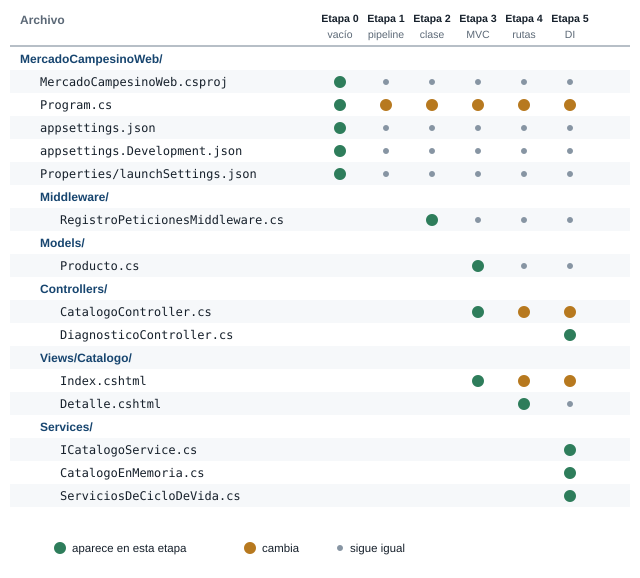
Verde: el archivo aparece en esa etapa. Ámbar: cambia. Gris: se queda igual.
4 Apertura: lo que ya sabes de la guía de rutas
Estas cuatro ideas de la guía de rutas sostienen todo lo de esta guía:
| Idea de la guía de rutas | Dónde la usas aquí |
|---|---|
Una ruta une un método HTTP con una dirección (MapGet, MapPost) |
En la etapa 7 la declaras con un atributo sobre un método de una clase |
Un parámetro llega de la ruta (/saludo/Maria) o del query string (/buscar?q=tomate) |
En la etapa 6 aparece un tercer lugar para un dato: el cuerpo de la petición |
Un estado resume cómo le fue al servidor: 200, 201, 400, 404 |
Aquí estrenas 302 y 401, y te encuentras de cerca con 415 y 500 |
UseDefaultFiles y UseStaticFiles sirven la carpeta wwwroot |
En la etapa 10 descubres que ya eran middleware |
En la guía de rutas pediste datos con /buscar?q=tomate: el dato viaja dentro de la dirección. Imagina que registras un pedido con una dirección como /pedido?cliente=Ana&producto=Tomate&cantidad=2. ¿Qué problemas le ves a enviar un pedido de ese modo? Escribe dos.
Dos problemas que aparecen enseguida: el pedido queda a la vista en la barra de direcciones y en cualquier enlace que copies, y una dirección se puede abrir una y otra vez sin querer, porque el método GET se diseñó para pedir y no para cambiar algo en el servidor. La etapa 6 resuelve las dos cosas con otro método, POST.
5 Etapa 6. Recibir datos: formularios y POST
Qué vas a lograr
Que el servidor reciba un pedido de tres maneras: un formulario de búsqueda que usa GET, un formulario de pedido que usa POST y una petición fetch que envía JSON. Al terminar registras pedidos, los ves en una tabla y sabes qué estado responde el servidor en cada caso.
La idea: decir el pedido o entregar un sobre
En la guía de rutas recibiste datos por la ruta y por el query string, y en la etapa 5 enviaste un JSON con fetch. Ahora el problema es registrar un pedido: un cliente, un producto y una cantidad. Meterlos en la dirección tiene dos defectos, los que acabas de predecir: el dato queda a la vista y GET se diseñó para pedir, no para cambiar algo en el servidor.
En la plaza, la diferencia es esta. GET es decir el pedido en voz alta: todos oyen y queda en la dirección. POST es entregar un sobre cerrado en el mostrador: el vendedor lo recibe y la dirección del puesto no cambia. Un formulario HTML escoge uno de los dos con el atributo method.
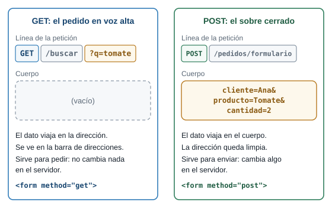
La misma información viaja en lugares distintos. Con GET va en la dirección y con POST va en el cuerpo.
El formulario de búsqueda tiene method="get" y un campo con name="q". Escribes to y presionas Buscar. ¿Qué cambia en la barra de direcciones?
La dirección pasa a http://localhost:5100/buscar?q=to. El navegador toma el nombre del campo (q), lo une con lo que escribiste (to) y lo pega al final de la dirección, igual que el query string de la guía de rutas. La página muestra el JSON que responde /buscar.
El formulario HTML
Un formulario es una etiqueta <form> con campos adentro. Cuatro piezas deciden qué viaja y adónde:
| Pieza | Qué hace |
|---|---|
method |
get pone los campos en la dirección. post los pone en el cuerpo de la petición |
action |
La ruta del servidor que recibe el envío |
name |
El nombre con que viaja cada dato. Sin name, el campo no viaja. El id no sirve para esto |
<button type="submit"> |
Al presionarlo, el navegador arma la petición con lo que hay en los campos |
El navegador junta los campos en pares nombre=valor separados por &. Ese texto es lo que llega al servidor, y cada name tiene que coincidir con una propiedad del modelo que lo recibe:
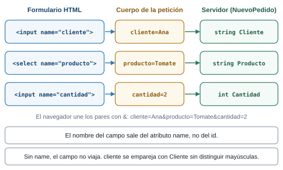
Del campo HTML al parámetro del servidor: el atributo name es el puente.
El código
Primero las páginas. Crea o reemplaza estos archivos dentro de wwwroot (index.html y estilos.css reemplazan a los de la guía de rutas; las otras cuatro páginas son nuevas).
wwwroot/index.html, el menú de esta guía:
<!DOCTYPE html>
<html lang="es">
<head>
<meta charset="utf-8">
<meta name="viewport" content="width=device-width, initial-scale=1">
<title>Plaza Campesina</title>
<link rel="stylesheet" href="/estilos.css">
</head>
<body>
<main>
<h1>Plaza Campesina</h1>
<ul>
<li><a href="/buscar.html">Buscar un producto (formulario con GET)</a></li>
<li><a href="/formulario.html">Hacer un pedido (formulario con POST)</a></li>
<li><a href="/fetch.html">Hacer un pedido (fetch con JSON)</a></li>
<li><a href="/pedidos.html">Ver los pedidos</a></li>
</ul>
</main>
</body>
</html>wwwroot/buscar.html, un formulario con GET:
<!DOCTYPE html>
<html lang="es">
<head>
<meta charset="utf-8">
<meta name="viewport" content="width=device-width, initial-scale=1">
<title>Buscar - Plaza Campesina</title>
<link rel="stylesheet" href="/estilos.css">
</head>
<body>
<main>
<h1>Buscar un producto</h1>
<!-- method="get": al enviar, los campos pasan a la dirección: /buscar?q=tomate -->
<form method="get" action="/buscar">
<label>
Nombre
<input type="text" name="q">
</label>
<button type="submit">Buscar</button>
</form>
<p><a href="/">Volver</a></p>
</main>
</body>
</html>wwwroot/formulario.html, un formulario con POST:
<!DOCTYPE html>
<html lang="es">
<head>
<meta charset="utf-8">
<meta name="viewport" content="width=device-width, initial-scale=1">
<title>Pedido - Plaza Campesina</title>
<link rel="stylesheet" href="/estilos.css">
</head>
<body>
<main>
<h1>Hacer un pedido</h1>
<!-- method="post": los campos viajan en el cuerpo y no se ven en la dirección.
El atributo name de cada campo es el nombre con que llega al servidor. -->
<form method="post" action="/pedidos/formulario">
<label>
Cliente
<input type="text" name="cliente">
</label>
<label>
Producto
<select name="producto">
<option>Tomate</option>
<option>Aguacate</option>
<option>Papa</option>
<option>Panela</option>
</select>
</label>
<label>
Cantidad
<input type="number" name="cantidad" value="1">
</label>
<button type="submit">Enviar pedido</button>
</form>
<p><a href="/">Volver</a></p>
</main>
</body>
</html>wwwroot/fetch.html, la misma idea con JavaScript, sin recargar la página:
<!DOCTYPE html>
<html lang="es">
<head>
<meta charset="utf-8">
<meta name="viewport" content="width=device-width, initial-scale=1">
<title>Pedido con fetch - Plaza Campesina</title>
<link rel="stylesheet" href="/estilos.css">
</head>
<body>
<main>
<h1>Hacer un pedido con fetch</h1>
<!-- Sin method ni action: JavaScript envía los datos y la página no se recarga. -->
<form id="formulario">
<label>
Cliente
<input type="text" id="cliente">
</label>
<label>
Producto
<select id="producto">
<option>Tomate</option>
<option>Aguacate</option>
<option>Papa</option>
<option>Panela</option>
</select>
</label>
<label>
Cantidad
<input type="number" id="cantidad" value="1">
</label>
<button type="submit">Enviar pedido</button>
</form>
<p id="resultado"></p>
<p><a href="/">Volver</a></p>
</main>
<script>
const formulario = document.getElementById("formulario");
const resultado = document.getElementById("resultado");
formulario.addEventListener("submit", async evento => {
evento.preventDefault();
const datos = {
cliente: document.getElementById("cliente").value,
producto: document.getElementById("producto").value,
cantidad: Number(document.getElementById("cantidad").value)
};
// POST con JSON: el encabezado Content-Type le dice al servidor cómo leer el cuerpo.
const respuesta = await fetch("/api/pedidos", {
method: "POST",
headers: { "Content-Type": "application/json" },
body: JSON.stringify(datos)
});
const cuerpo = await respuesta.json();
if (respuesta.status === 201) {
resultado.className = "";
resultado.textContent = "Pedido " + cuerpo.id + " guardado (201).";
formulario.reset();
} else {
resultado.className = "error";
resultado.textContent = "Error " + respuesta.status + ": " + cuerpo.error;
}
});
</script>
</body>
</html>wwwroot/pedidos.html, la tabla de pedidos:
<!DOCTYPE html>
<html lang="es">
<head>
<meta charset="utf-8">
<meta name="viewport" content="width=device-width, initial-scale=1">
<title>Pedidos - Plaza Campesina</title>
<link rel="stylesheet" href="/estilos.css">
</head>
<body>
<main>
<h1>Pedidos</h1>
<table>
<thead>
<tr><th>Número</th><th>Cliente</th><th>Producto</th><th>Cantidad</th></tr>
</thead>
<tbody id="filas"></tbody>
</table>
<p id="vacio" class="aviso" hidden>Todavía no hay pedidos.</p>
<p><a href="/">Volver</a></p>
</main>
<script>
async function cargar() {
// GET: pide la lista actual. Recargar la página nunca crea un pedido nuevo.
const respuesta = await fetch("/api/pedidos");
const pedidos = await respuesta.json();
document.getElementById("vacio").hidden = pedidos.length > 0;
const filas = document.getElementById("filas");
for (const pedido of pedidos) {
const fila = filas.insertRow();
// textContent trata el texto como texto: un nombre con etiquetas no se ejecuta.
fila.insertCell().textContent = pedido.id;
fila.insertCell().textContent = pedido.cliente;
fila.insertCell().textContent = pedido.producto;
fila.insertCell().textContent = pedido.cantidad;
}
}
cargar();
</script>
</body>
</html>wwwroot/estilos.css:
body {
font-family: system-ui, sans-serif;
background: #f6f3e8;
color: #2b2b2b;
margin: 0;
}
main {
max-width: 32rem;
margin: 2rem auto;
padding: 0 1rem;
}
h1, h2 {
color: #2e6b2f;
}
label {
display: block;
margin-bottom: 1rem;
}
input, textarea, select {
display: block;
width: 100%;
box-sizing: border-box;
padding: 0.5rem;
margin-top: 0.25rem;
font: inherit;
}
button {
background: #2e6b2f;
color: #ffffff;
border: 0;
border-radius: 4px;
padding: 0.6rem 1.2rem;
font: inherit;
cursor: pointer;
}
ul {
padding-left: 1.2rem;
}
table {
border-collapse: collapse;
width: 100%;
}
th, td {
border-bottom: 1px solid #d8d2bd;
padding: 0.4rem 0.5rem;
text-align: left;
}
.aviso {
background: #fff7d6;
border-left: 4px solid #d9a400;
padding: 0.5rem 0.8rem;
}
.error {
color: #b3261e;
}Y ahora Program.cs. Reemplaza todo su contenido por:
// Etapa 6: recibir datos. Un formulario HTML y una petición con fetch llegan al mismo servidor.
using Microsoft.AspNetCore.Mvc;
var builder = WebApplication.CreateBuilder(args);
var app = builder.Build();
// Sirve la carpeta wwwroot: "/" entrega wwwroot/index.html.
app.UseDefaultFiles();
app.UseStaticFiles();
var productos = new List<Producto>
{
new(1, "Tomate", 3500m),
new(2, "Aguacate", 6000m),
new(3, "Papa", 2800m),
new(4, "Panela", 4500m),
};
// La lista de pedidos vive en la memoria del programa: se borra al detener el servidor.
var pedidos = new List<Pedido>();
app.MapGet("/api/productos", () => productos);
// GET con formulario: los datos viajan en la dirección (?q=...).
app.MapGet("/buscar", (string? q) =>
{
var texto = q ?? "";
return productos.Where(p => p.Nombre.Contains(texto, StringComparison.OrdinalIgnoreCase));
});
// GET: leer los pedidos sin cambiar nada.
app.MapGet("/api/pedidos", () => pedidos);
// POST con formulario HTML: los datos viajan en el cuerpo, como clave=valor separados por &.
// Un formulario estático no puede traer el token antifalsificación, así que lo desactivamos aquí.
// La etapa 8 lo recupera: Razor lo agrega solo.
app.MapPost("/pedidos/formulario", ([FromForm] NuevoPedido nuevo) =>
{
var error = Validar(nuevo, productos);
if (error is not null)
{
return Results.BadRequest(new { error });
}
pedidos.Add(Crear(nuevo, pedidos));
// Post/Redirect/Get: después de guardar, el navegador pasa a una página que pide con GET.
// Así, recargar la página no repite el pedido.
return Results.Redirect("/pedidos.html");
}).DisableAntiforgery();
// POST con JSON: lo envía JavaScript con fetch. Responde 201 Created con lo que quedó guardado.
app.MapPost("/api/pedidos", (NuevoPedido nuevo) =>
{
var error = Validar(nuevo, productos);
if (error is not null)
{
return Results.BadRequest(new { error });
}
var pedido = Crear(nuevo, pedidos);
pedidos.Add(pedido);
return Results.Created($"/api/pedidos/{pedido.Id}", pedido);
});
app.Run();
// Devuelve el mensaje de error, o null si el pedido es válido.
static string? Validar(NuevoPedido nuevo, List<Producto> productos)
{
if (string.IsNullOrWhiteSpace(nuevo.Cliente))
{
return "El nombre del cliente es obligatorio";
}
if (!productos.Any(p => p.Nombre == nuevo.Producto))
{
return $"No vendemos {nuevo.Producto}";
}
if (nuevo.Cantidad < 1 || nuevo.Cantidad > 100)
{
return "La cantidad debe estar entre 1 y 100";
}
return null;
}
static Pedido Crear(NuevoPedido nuevo, List<Pedido> pedidos)
{
return new Pedido(pedidos.Count + 1, nuevo.Cliente, nuevo.Producto, nuevo.Cantidad);
}
record Producto(int Id, string Nombre, decimal Precio);
// Lo que llega del cliente.
record NuevoPedido(string Cliente, string Producto, int Cantidad);
// Lo que el servidor guarda: lo recibido más un número de pedido.
record Pedido(int Id, string Cliente, string Producto, int Cantidad);Lo que hace cada parte de Program.cs:
using Microsoft.AspNetCore.Mvc;trae el atributo[FromForm]. Las otras líneas que ya conoces (CreateBuilder,UseDefaultFiles,UseStaticFiles,MapGet,Run) hacen lo mismo que en la guía de rutas.var pedidos = new List<Pedido>();es la lista donde se guardan los pedidos. Vive en la memoria del programa: se borra cuando detienes el servidor. Por ahora basta. En el tema de bases de datos con Entity Framework Core los pedidos pasarán a una base de datos y sobrevivirán a un reinicio./buscares la ruta del formulario con GET. Recibeqdel query string y devuelve los productos cuyo nombre lo contiene./pedidos/formularioes la ruta del formulario con POST.[FromForm] NuevoPedido nuevole pide al servidor que lea el cuerpo como formulario y arme unNuevoPedidoemparejando cadanamecon una propiedad./api/pedidosconMapPostrecibe el JSON que envíafetch. Sin[FromForm], el parámetroNuevoPedido nuevose lee como JSON, igual queContactoen la guía de rutas.Validardevuelve el texto del error, onullsi el pedido está bien. Las dos rutas POST la usan.Results.Redirect("/pedidos.html")responde302y le dice al navegador que pida esa dirección con GET. Se llama Post/Redirect/Get, y la explicación está más abajo.Results.Created(...)responde201y agrega el encabezadoLocationcon la dirección del pedido nuevo..DisableAntiforgery()apaga una exigencia que un formulario dewwwrootno puede cumplir. También se explica más abajo.
record NuevoPedido(string Cliente, string Producto, int Cantidad);describe lo que llega del cliente.record Pedido(int Id, ...)describe lo que el servidor guarda: lo recibido más un número.new { error }crea un objeto anónimo con una propiedad llamadaerror. Es la forma corta denew { error = error }. Se convierte en JSON:{"error":"..."}.static string? Validar(...)es una función declarada al final del archivo.string?dice que puede devolver un texto onull. Elstaticy su significado completo llegan en la etapa 7.error is not nullpregunta si hay un error.!productos.Any(p => ...)pregunta si no hay ningún producto que cumpla la condición:Anyresponde si al menos uno la cumple y!invierte la respuesta.productos.Where(p => p.Nombre.Contains(texto, StringComparison.OrdinalIgnoreCase))filtra los productos cuyo nombre contiene el texto, sin distinguir mayúsculas. Un texto vacío está contenido en todos los nombres, así que/buscarsinqdevuelve los cuatro.||significa “o”.nuevo.Cantidad < 1 || nuevo.Cantidad > 100rechaza cantidades fuera del rango de 1 a 100.
Por qué .DisableAntiforgery()
Otro sitio podría esconder un formulario que haga que tu navegador envíe un POST a tu servidor sin que lo notes. Para evitarlo, ASP.NET Core usa un token antifalsificación: un valor que el servidor pone en sus propios formularios y exige de vuelta en cada POST, de modo que solo acepta envíos que salieron de su página.
Con [FromForm], el servidor agrega esa exigencia a la ruta. Una página estática de wwwroot, como formulario.html, no puede traer el token, porque el servidor no la arma: la entrega tal cual. Por eso la ruta lleva .DisableAntiforgery(). Esta decisión vale solo para esta etapa. La etapa 8 recupera la protección: Razor agrega el token solo.
Ejecutarlo
Ejecuta el servidor y prueba cada página en el navegador:
/buscar.html. Escribetoy presiona Buscar. La dirección pasa a/buscar?q=toy ves[{"id":1,"nombre":"Tomate","precio":3500}]./formulario.html. Escribe un nombre y presiona Enviar pedido. La dirección termina en/pedidos.htmly la tabla muestra tu pedido./fetch.html. Escribe un nombre y presiona Enviar pedido. La página no se recarga y aparecePedido 2 guardado (201).(el número depende de cuántos pedidos lleves). Déjalo vacío y envía: apareceError 400: El nombre del cliente es obligatorio.- Recarga
/pedidos.html. El número de filas no cambia.
Y estas peticiones, con su estado:
| Petición | Estado | Cuerpo |
|---|---|---|
GET /buscar?q=to |
200 |
[{"id":1,"nombre":"Tomate","precio":3500}] |
GET /buscar (sin q) |
200 |
los cuatro productos |
POST /pedidos/formulario con cliente=Ana&producto=Tomate&cantidad=2 |
302 |
vacío, con el encabezado Location: /pedidos.html |
POST /pedidos/formulario con cliente= vacío |
400 |
{"error":"El nombre del cliente es obligatorio"} |
POST /pedidos/formulario sin el campo cantidad |
400 |
vacío: el servidor no pudo leer el formulario |
POST /pedidos/formulario con cantidad=abc |
400 |
vacío |
POST /api/pedidos con un JSON válido |
201 |
{"id":2,"cliente":"Luis","producto":"Papa","cantidad":3} y Location: /api/pedidos/2 |
POST /api/pedidos con el producto Mango |
400 |
{"error":"No vendemos Mango"} |
POST /api/pedidos con cantidad 500 |
400 |
{"error":"La cantidad debe estar entre 1 y 100"} |
POST /api/pedidos sin Content-Type: application/json |
415 |
vacío |
GET /api/pedidos |
200 |
la lista de pedidos guardados |
Con curl, -d envía un cuerpo con el formato de un formulario (clave=valor&clave=valor), igual que el navegador:
$ curl -i -d "cliente=Ana&producto=Tomate&cantidad=2" http://localhost:5100/pedidos/formulario
HTTP/1.1 302 Found
Content-Length: 0
Location: /pedidos.html
$ curl -i -d "cliente=&producto=Tomate&cantidad=2" http://localhost:5100/pedidos/formulario
HTTP/1.1 400 Bad Request
Content-Type: application/json; charset=utf-8
{"error":"El nombre del cliente es obligatorio"}Para enviar JSON, curl necesita el encabezado Content-Type, o el servidor responde 415:
$ curl -i -X POST -H "Content-Type: application/json" -d '{"cliente":"Luis","producto":"Papa","cantidad":3}' http://localhost:5100/api/pedidos
HTTP/1.1 201 Created
Content-Type: application/json; charset=utf-8
Location: /api/pedidos/2
{"id":2,"cliente":"Luis","producto":"Papa","cantidad":3}
$ curl -i -X POST -d '{"cliente":"Luis","producto":"Papa","cantidad":3}' http://localhost:5100/api/pedidos
HTTP/1.1 415 Unsupported Media Type
Content-Length: 0
$ curl -i http://localhost:5100/api/pedidos
HTTP/1.1 200 OK
Content-Type: application/json; charset=utf-8
[{"id":1,"cliente":"Ana","producto":"Tomate","cantidad":2},{"id":2,"cliente":"Luis","producto":"Papa","cantidad":3}]Qué pasó por dentro
Para el formulario con POST, cuando presionas Enviar pedido:
- El navegador toma cada campo que tiene
namey arma el cuerpo:cliente=Ana&producto=Tomate&cantidad=2. - Envía
POST /pedidos/formulariocon ese cuerpo. - El servidor encuentra la ruta
MapPost("/pedidos/formulario", ...)y lee el cuerpo como formulario. Con[FromForm]arma unNuevoPedidoemparejandoclienteconCliente,productoconProductoycantidadconCantidad. Validarrevisa el pedido. Si hay error, responde400con el mensaje.- Si está bien, crea un
Pedidocon el número siguiente, lo agrega a la lista y responde302conLocation: /pedidos.html. - El navegador sigue la dirección nueva con un GET y pide
pedidos.html. - La página
pedidos.htmlpideGET /api/pedidoscon JavaScript y dibuja la tabla.
El paso 5 y el 6 son Post/Redirect/Get. Después de guardar, el servidor no responde con la página: manda al navegador a una dirección que se pide con GET. Así, la pantalla final es el resultado de un GET y recargarla repite el GET, no el POST. En la prueba, recargar pedidos.html dejó el mismo número de filas.
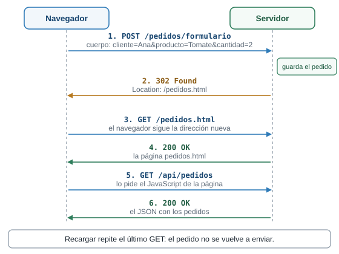
Un POST termina en un 302, y la pantalla que ves es el resultado de un GET.
Para el fetch el recorrido es parecido, con dos diferencias: el cuerpo es JSON (Content-Type: application/json) y la página lee el estado de la respuesta en vez de seguir una redirección. Si es 201, muestra el número del pedido. Si no, muestra el mensaje de error que trae el JSON.
Falla provocada: quitar .DisableAntiforgery()
Para ver por qué está esa llamada, bórrala. Cambia }).DisableAntiforgery(); por }); al final de la ruta /pedidos/formulario, detén el servidor y vuelve a ejecutarlo. Compila y arranca sin quejas. Envía el formulario de /formulario.html: no ves la tabla de pedidos, porque el servidor responde 500 con el cuerpo vacío. El motivo aparece en la consola:
fail: Microsoft.AspNetCore.Server.Kestrel[13]
Connection id "0HNPF1LE2L76G", Request id "0HNPF1LE2L76G:00000001": An unhandled exception was thrown by the application.
System.InvalidOperationException: Endpoint HTTP: POST /pedidos/formulario contains anti-forgery metadata, but a middleware was not found that supports anti-forgery.El identificador de la conexión cambia en cada ejecución. Lo que importa es la frase contains anti-forgery metadata: la ruta exige el token y un formulario de wwwroot no lo trae. Con el comando de clase el entorno es Production: la respuesta no trae detalle y el motivo solo aparece en la consola. Devuelve la llamada antes de seguir.
Retos de la etapa 6
En formulario.html borra name="cliente" del campo del cliente, guarda y envía el formulario con un nombre escrito. Antes de hacerlo, predice qué estado responde el servidor y qué ves en pantalla.
Responde 400 con el cuerpo vacío, y no ves la tabla de pedidos. Sin name, el navegador no envía el campo cliente. El servidor no puede armar el NuevoPedido sin él y responde 400 antes de llegar a Validar. El mismo cuerpo, sin ese campo, se ve con curl:
$ curl -i -d "producto=Tomate&cantidad=2" http://localhost:5100/pedidos/formulario
HTTP/1.1 400 Bad Request
Content-Length: 0Devuelve el atributo name="cliente". Un campo sin name es un campo que el servidor nunca ve.
Abre http://localhost:5100/pedidos/formulario en la barra de direcciones. La ruta existe, pero la registraste con MapPost. Predice el estado.
405 Method Not Allowed, con el encabezado Allow: POST y el cuerpo vacío. La ruta existe, pero no para el método GET:
$ curl -i http://localhost:5100/pedidos/formulario
HTTP/1.1 405 Method Not Allowed
Content-Length: 0
Allow: POSTUna ruta es una pareja: método y dirección. Con la misma dirección puedes tener una ruta GET y otra POST, y para cada pareja responde su propia función. Compara con un 404, que significa que ninguna dirección coincide.
Cierre de la etapa 6
- Qué cambió: el servidor recibe datos de un formulario con GET, de un formulario con POST y de un
fetchcon JSON. Guarda pedidos en una lista en memoria y responde302,201,400o415. - Cómo verificarlo: envía los tres formularios de las páginas y repite las peticiones de la tabla con
curl. - Qué debes ver: el pedido en la tabla de
/pedidos.html,201para el JSON,400con mensaje para los datos malos y415sinContent-Type. - Lo que falta, y de dónde sale la etapa 7:
Program.csya tiene unas cien líneas y mezcla todo: archivos, rutas, validación, la lista de productos y los cuatro tipos. Agregar una ruta más lo hace crecer, y encontrar una función exige recorrerlo entero. La etapa 7 reparte ese código.
6 Etapa 7. Modelos y controladores
Qué vas a lograr
Que el mismo servidor de la etapa 6, con las mismas direcciones y las mismas páginas, quede repartido en archivos con un oficio cada uno: los modelos en Models/ y los controladores en Controllers/. Program.cs baja de unas cien líneas a quince.
La idea: el vendedor y la ficha
Hay un patrón para ordenar un servidor que atiende páginas y datos: MVC, por Model, View y Controller. Reparte el trabajo en tres oficios:
| Pieza | Qué hace | En la plaza | Dónde vive |
|---|---|---|---|
| Modelo | Describe un dato de la aplicación | La ficha del producto | Models/ |
| Controlador | Recibe la petición, reúne lo que hace falta y decide qué responder | El vendedor que atiende | Controllers/ |
| Vista | Arma lo que ve el cliente | El letrero o escaparate | Views/ (etapa 8) |
En esta etapa llegan el modelo y el controlador. La vista llega en la etapa 8.
Vas a mover todo el código de Program.cs a controladores y a mantener las mismas direcciones: /api/productos, /buscar, /api/pedidos y /pedidos/formulario. ¿Tienes que cambiar algo en las páginas de wwwroot?
No. Las páginas piden direcciones, y las direcciones no cambian: las declara un atributo sobre cada método del controlador. El navegador no tiene forma de saber en qué archivo vive el código. Por eso no tocas nada en wwwroot.
El código
Reemplaza Program.cs y crea las carpetas Models y Controllers dentro de Plaza. En wwwroot no cambia nada.
Program.cs, ahora de quince líneas:
// Etapa 7: el mismo servidor de la etapa 6, repartido en modelos y controladores.
var builder = WebApplication.CreateBuilder(args);
// Le dice a ASP.NET Core que busque clases controlador en el proyecto.
builder.Services.AddControllers();
var app = builder.Build();
app.UseDefaultFiles();
app.UseStaticFiles();
// Conecta cada método de cada controlador con su dirección (la que declara el atributo).
app.MapControllers();
app.Run();Los modelos, uno por archivo, en Models/. Son los mismos record de la etapa 6, ahora public y con un namespace:
Models/Producto.cs:
namespace Plaza.Models;
public record Producto(int Id, string Nombre, decimal Precio);Models/NuevoPedido.cs:
namespace Plaza.Models;
// Lo que llega del cliente.
public record NuevoPedido(string Cliente, string Producto, int Cantidad);Models/Pedido.cs:
namespace Plaza.Models;
// Lo que el servidor guarda: lo recibido más un número de pedido.
public record Pedido(int Id, string Cliente, string Producto, int Cantidad);Los controladores, en Controllers/:
Controllers/ProductosController.cs:
using Microsoft.AspNetCore.Mvc;
using Plaza.Models;
namespace Plaza.Controllers;
// ControllerBase: un controlador que responde datos (JSON), sin vistas.
// [ApiController] activa ayudas para APIs, por ejemplo responder 400 solo cuando los datos no se pueden leer.
[ApiController]
[Route("api/productos")]
public class ProductosController : ControllerBase
{
// public static: cualquiera puede leer esta lista sin crear un ProductosController.
// Funciona, pero PedidosController ya depende de este controlador. La etapa 9 lo corrige.
public static readonly List<Producto> Lista = new()
{
new(1, "Tomate", 3500m),
new(2, "Aguacate", 6000m),
new(3, "Papa", 2800m),
new(4, "Panela", 4500m),
};
// GET /api/productos
[HttpGet]
public List<Producto> Listar()
{
return Lista;
}
// GET /api/productos/2
[HttpGet("{id:int}")]
public IActionResult Obtener(int id)
{
var producto = Lista.FirstOrDefault(p => p.Id == id);
if (producto is null)
{
return NotFound(new { error = $"No existe el producto {id}" });
}
return Ok(producto);
}
// La barra inicial hace la ruta absoluta: ignora el [Route] del controlador.
// GET /buscar?q=to
[HttpGet("/buscar")]
public IEnumerable<Producto> Buscar(string? q)
{
var texto = q ?? "";
return Lista.Where(p => p.Nombre.Contains(texto, StringComparison.OrdinalIgnoreCase));
}
}Controllers/PedidosController.cs:
using Microsoft.AspNetCore.Mvc;
using Plaza.Models;
namespace Plaza.Controllers;
// Sin [Route] en la clase: cada método declara su dirección completa.
// Son las mismas direcciones de la etapa 6, así que las páginas de wwwroot siguen funcionando.
[ApiController]
public class PedidosController : ControllerBase
{
private static readonly List<Pedido> pedidos = new();
// GET /api/pedidos
[HttpGet("api/pedidos")]
public List<Pedido> Listar()
{
return pedidos;
}
// POST /api/pedidos con un JSON en el cuerpo.
[HttpPost("api/pedidos")]
public IActionResult CrearConJson(NuevoPedido nuevo)
{
var error = Validar(nuevo);
if (error is not null)
{
return BadRequest(new { error });
}
var pedido = Guardar(nuevo);
return Created($"/api/pedidos/{pedido.Id}", pedido);
}
// POST /pedidos/formulario con los campos del formulario HTML.
[HttpPost("pedidos/formulario")]
public IActionResult CrearConFormulario([FromForm] NuevoPedido nuevo)
{
var error = Validar(nuevo);
if (error is not null)
{
return BadRequest(new { error });
}
Guardar(nuevo);
return Redirect("/pedidos.html");
}
private static string? Validar(NuevoPedido nuevo)
{
if (string.IsNullOrWhiteSpace(nuevo.Cliente))
{
return "El nombre del cliente es obligatorio";
}
// Para saber si el producto existe, este controlador lee la lista de otro controlador.
if (!ProductosController.Lista.Any(p => p.Nombre == nuevo.Producto))
{
return $"No vendemos {nuevo.Producto}";
}
if (nuevo.Cantidad < 1 || nuevo.Cantidad > 100)
{
return "La cantidad debe estar entre 1 y 100";
}
return null;
}
private static Pedido Guardar(NuevoPedido nuevo)
{
var pedido = new Pedido(pedidos.Count + 1, nuevo.Cliente, nuevo.Producto, nuevo.Cantidad);
pedidos.Add(pedido);
return pedido;
}
}Los archivos escriben namespace Plaza.Models; y namespace Plaza.Controllers;. La palabra Plaza es el nombre del proyecto (Plaza.csproj). Si creaste tu proyecto con otro nombre, usa el tuyo en cada namespace y en cada using Plaza.Models;.
Lo que hace cada pieza:
| Pieza | Qué hace |
|---|---|
builder.Services.AddControllers(); |
Le dice a ASP.NET Core que busque clases controlador en el proyecto |
app.MapControllers(); |
Conecta cada método de cada controlador con su dirección, la que declara su atributo |
ControllerBase |
La clase de la que heredan los controladores que responden datos (JSON), sin vistas |
[ApiController] |
Activa ayudas para APIs. Una de ellas cambia un comportamiento: se explica más abajo |
[Route("api/productos")] sobre la clase |
El prefijo común de todos sus métodos |
[HttpGet], [HttpGet("{id:int}")], [HttpPost("api/pedidos")] |
El método HTTP y el resto de la dirección. {id:int} es la misma restricción de la guía de rutas |
[HttpGet("/buscar")] |
Con una barra inicial, la dirección es absoluta: ignora el [Route] de la clase |
IActionResult, Ok(...), NotFound(...), BadRequest(...), Created(...), Redirect(...) |
Los mismos estados de Results.* de la guía de rutas, ahora como métodos del controlador |
- Una clase agrupa datos y funciones.
public class ProductosController : ControllerBasedeclara una clase pública que hereda deControllerBase: recibe todo lo que esa clase ya sabe hacer, comoOk(...)yNotFound(...). - Un método es una función dentro de una clase.
public List<Producto> Listar()dice: “se llamaListar, no recibe nada y devuelve una lista de productos”. publicdeja usar algo desde cualquier clase.privatelo deja usar solo dentro de su clase.staticdice que algo pertenece a la clase y no a cada objeto que se cree: hay una sola copia.readonlydice que la variable no se puede reasignar después de crearla (la lista sí se puede llenar).namespace Plaza.Models;pone un nombre de carpeta lógica al archivo, yusing Plaza.Models;permite usar sus tipos sin escribir el prefijo.[Algo]sobre una clase o un método es un atributo: una etiqueta que ASP.NET Core lee para saber qué hacer.new()sin tipo crea el objeto del tipo que ya declaró la variable:List<Pedido> pedidos = new();.
Lo que cambió sin que lo pidieras
Con [ApiController], el framework revisa los datos antes de ejecutar tu método, y eso cambia respuestas que en la etapa 6 eran otras. Compara estos casos, que salieron de la prueba:
| Petición | Etapa 6 | Etapa 7 |
|---|---|---|
POST /pedidos/formulario con cliente= vacío |
400 con {"error":"El nombre del cliente es obligatorio"} |
400 con un objeto de errores del framework, que dice The Cliente field is required. |
POST /pedidos/formulario sin el campo cantidad |
400 con el cuerpo vacío |
400 con {"error":"La cantidad debe estar entre 1 y 100"}: llega 0 y lo rechaza tu Validar |
POST /api/pedidos con el JSON roto {"cliente": |
400 con el cuerpo vacío |
400 con un objeto de errores que menciona The nuevo field is required. y el detalle del JSON |
Así se ve el primer caso en la etapa 7:
$ curl -i -d "cliente=&producto=Tomate&cantidad=2" http://localhost:5100/pedidos/formulario
HTTP/1.1 400 Bad Request
Content-Type: application/problem+json; charset=utf-8
{"type":"https://tools.ietf.org/html/rfc9110#section-15.5.1","title":"One or more validation errors occurred.","status":400,"errors":{"Cliente":["The Cliente field is required."]},"traceId":"00-3ed34e545b9d022bab72bebae4819866-a9ba6e8d91ccf62c-00"}La causa está en Plaza.csproj, que tiene <Nullable>enable</Nullable>: una propiedad string Cliente sin ? cuenta como obligatoria. Con [ApiController], el framework rechaza por su cuenta un valor ausente antes de ejecutar el método. En las rutas mínimas de la etapa 6 nadie hacía esa revisión, y el texto vacío llegaba hasta tu Validar. Con un JSON, en cambio, "cliente":"" sí llega a Validar: en la prueba respondió {"error":"El nombre del cliente es obligatorio"}.
No hay nada que arreglar aquí: conviven dos validaciones, la del framework y la tuya. Las validaciones con atributos son tema de la guía de validaciones. Basta con saber que existen y que [ApiController] las activa.
Un olor a propósito
Abre PedidosController y mira Validar. Para saber si un producto existe, lee ProductosController.Lista, una lista public static de otro controlador. Funciona, pero ahora un controlador depende de otro. Tenlo presente: la etapa 9 lo corrige.
Ejecutarlo
Ejecuta el servidor y repite las peticiones de la etapa 6. Todas responden igual, salvo las tres de la tabla de arriba. Las páginas de wwwroot siguen funcionando sin cambios. Hay además una ruta nueva por atributo:
| Petición | Estado | Cuerpo |
|---|---|---|
GET /api/productos/2 |
200 |
{"id":2,"nombre":"Aguacate","precio":6000} |
GET /api/productos/99 |
404 |
{"error":"No existe el producto 99"} |
GET /api/productos/abc |
404 |
vacío: ninguna ruta coincide con {id:int} |
GET /buscar?q=to |
200 |
[{"id":1,"nombre":"Tomate","precio":3500}] |
Qué pasó por dentro
Para GET /api/productos/2:
- Al arrancar,
MapControllersleyó los atributos de cada controlador y registró una ruta por método.ProductosController.Obtenerquedó con la direcciónapi/productos/{id:int}: el[Route]de la clase más el[HttpGet("{id:int}")]del método. - Llega la petición y el servidor encuentra esa ruta. Guarda
id = 2. - El servidor crea un
ProductosControllernuevo y llama aObtener(2). - El método busca en la lista y devuelve
Ok(producto): un200con el producto en JSON. - Cuando la respuesta sale, el controlador se descarta.
El paso 3 importa más de lo que parece: el framework crea un controlador nuevo en cada petición. Por eso la lista de pedidos de PedidosController es static, y la falla provocada que sigue lo demuestra.
Falla provocada: la lista sin static
En PedidosController, quita la palabra static en dos líneas: la de la lista (private static readonly List<Pedido> pedidos pasa a private readonly List<Pedido> pedidos) y la de Guardar (private static Pedido Guardar pasa a private Pedido Guardar). Compila. Detén el servidor, vuelve a ejecutarlo y prueba:
$ curl -i -X POST -H "Content-Type: application/json" -d '{"cliente":"Luis","producto":"Papa","cantidad":3}' http://localhost:5100/api/pedidos
HTTP/1.1 201 Created
{"id":1,"cliente":"Luis","producto":"Papa","cantidad":3}
$ curl -i http://localhost:5100/api/pedidos
HTTP/1.1 200 OK
[]El pedido se guardó y desapareció. El POST lo guardó en la lista de su controlador, que murió con la petición. El GET siguiente crea otro controlador con otra lista vacía. Devuelve las dos palabras static.
Este es el primer indicio de un problema que la etapa 9 resuelve de otra forma: algo que debe vivir más que una petición no puede vivir dentro de un controlador. Y aun con static, los pedidos viven en la memoria del programa: se pierden al detener el servidor. Esa limitación se levanta en el tema de bases de datos con Entity Framework Core.
Retos de la etapa 7
En ProductosController, crea GET /api/productos/baratos que devuelva los productos con precio menor a 4000. Pruébala junto a /api/productos/2.
Agrega este método a ProductosController, antes de Obtener:
// GET /api/productos/baratos
[HttpGet("baratos")]
public IEnumerable<Producto> Baratos()
{
return Lista.Where(p => p.Precio < 4000);
}/api/productos/baratos responde [{"id":1,"nombre":"Tomate","precio":3500},{"id":3,"nombre":"Papa","precio":2800}] y /api/productos/2 sigue respondiendo el aguacate. La ruta no choca con {id:int} porque baratos no es un entero, igual que en la guía de rutas. Como cambiaste código, reinicia el servidor.
En PedidosController, crea GET /api/pedidos/{id:int}. Si el pedido existe, responde 200 con el pedido. Si no, 404 con un mensaje.
Agrega este método a PedidosController:
// GET /api/pedidos/1
[HttpGet("api/pedidos/{id:int}")]
public IActionResult Obtener(int id)
{
var pedido = pedidos.FirstOrDefault(p => p.Id == id);
if (pedido is null)
{
return NotFound(new { error = $"No existe el pedido {id}" });
}
return Ok(pedido);
}Después de enviar un pedido, /api/pedidos/1 responde 200 con el pedido, y /api/pedidos/7 responde 404 con {"error":"No existe el pedido 7"}. El método usa la misma lista static que Listar, así que ve los mismos pedidos.
Cierre de la etapa 7
- Qué cambió:
Program.cstiene quince líneas. El código vive enModels/yControllers/, con las mismas direcciones de la etapa 6. - Cómo verificarlo: repite las peticiones de la etapa 6 y pide
/api/productos/2y/api/productos/99. - Qué debes ver: los mismos resultados de la etapa 6, salvo los tres casos de la tabla “Lo que cambió sin que lo pidieras”.
- Lo que falta, y de dónde sale la etapa 8: tus controladores devuelven datos, que sirven a otros programas. Una persona necesita una página con el catálogo. La etapa 8 agrega la tercera pieza de MVC: la vista.
7 Etapa 8. Vistas Razor
Qué vas a lograr
Que el servidor responda páginas armadas en el servidor con los datos del modelo: un catálogo con enlaces, el detalle de un producto, un formulario de pedido y una página de agradecimiento. Es la tercera pieza de MVC.
La idea: el letrero de la plaza
Hasta ahora tus controladores devolvían datos, y las páginas de wwwroot los pedían con fetch y los dibujaban con JavaScript. Eso sirve para otros programas, pero hay otro camino: que el servidor arme el HTML ya terminado. Una vista es una plantilla de HTML con huecos para datos. El controlador le entrega un modelo, la vista llena los huecos y la respuesta sale como una página completa. En la plaza, la vista es el letrero o escaparate que ve el cliente.
El lenguaje de esas plantillas se llama Razor: HTML normal con instrucciones de C# que empiezan con @. Los archivos terminan en .cshtml.
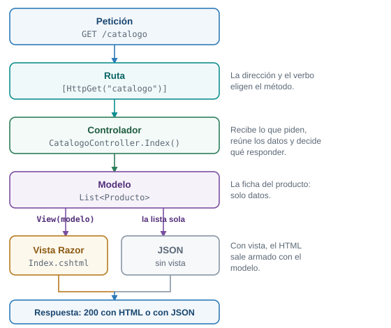
El recorrido de una petición por MVC. El controlador decide si la respuesta sale de una vista o es JSON.
La vista Pedir.cshtml tiene un formulario con method="post". En todo el archivo no escribirás una sola línea sobre antifalsificación. Cuando abras la página en el navegador y mires su HTML, ¿habrá un campo con un token antifalsificación?
Sí. Razor agrega solo un campo oculto llamado __RequestVerificationToken, con un valor largo (unos 155 caracteres en la prueba). Lo agrega porque el formulario usa asp-action, que arma el formulario por ti. Es la protección que la etapa 6 tuvo que apagar con .DisableAntiforgery().
El código
Esta etapa reemplaza dos archivos, agrega uno a wwwroot y crea los demás. ProductosController, los modelos y el resto de wwwroot quedan igual.
Program.cs, con AddControllersWithViews en lugar de AddControllers:
// Etapa 8: además de JSON, el servidor responde páginas armadas con vistas Razor.
var builder = WebApplication.CreateBuilder(args);
// AddControllersWithViews = AddControllers + el motor de vistas Razor.
builder.Services.AddControllersWithViews();
var app = builder.Build();
app.UseDefaultFiles();
app.UseStaticFiles();
app.MapControllers();
app.Run();Controllers/CatalogoController.cs, el controlador de las páginas. Es el primero que hereda de Controller:
using Microsoft.AspNetCore.Mvc;
using Plaza.Models;
namespace Plaza.Controllers;
// Controller (y no ControllerBase): un controlador que puede devolver vistas con View().
// Sin [ApiController]: una vista no recibe JSON, recibe formularios.
public class CatalogoController : Controller
{
// GET /catalogo
// View(modelo) busca Views/Catalogo/Index.cshtml: carpeta = controlador, archivo = método.
[HttpGet("catalogo")]
public IActionResult Index()
{
return View(ProductosController.Lista);
}
// GET /catalogo/2
[HttpGet("catalogo/{id:int}")]
public IActionResult Detalle(int id)
{
var producto = ProductosController.Lista.FirstOrDefault(p => p.Id == id);
if (producto is null)
{
return NotFound();
}
return View(producto);
}
// GET /catalogo/2/pedir: muestra el formulario con el producto ya elegido.
[HttpGet("catalogo/{id:int}/pedir")]
public IActionResult Pedir(int id)
{
var producto = ProductosController.Lista.FirstOrDefault(p => p.Id == id);
if (producto is null)
{
return NotFound();
}
return View(new NuevoPedido("", producto.Nombre, 1));
}
// POST /catalogo/pedir: recibe el formulario de la vista Pedir.
// [ValidateAntiForgeryToken] rechaza con 400 un POST que no trae el token que Razor puso en el formulario.
[HttpPost("catalogo/pedir")]
[ValidateAntiForgeryToken]
public IActionResult Confirmar(NuevoPedido nuevo)
{
var error = PedidosController.Validar(nuevo);
if (error is not null)
{
ViewBag.Error = error;
return View("Pedir", nuevo);
}
var pedido = PedidosController.Guardar(nuevo);
// Post/Redirect/Get otra vez: el POST termina en un GET a la página de gracias.
return RedirectToAction(nameof(Gracias), new { id = pedido.Id });
}
// GET /catalogo/gracias/1
[HttpGet("catalogo/gracias/{id:int}")]
public IActionResult Gracias(int id)
{
var pedido = PedidosController.Todos.FirstOrDefault(p => p.Id == id);
if (pedido is null)
{
return NotFound();
}
return View(pedido);
}
}Controllers/PedidosController.cs, reemplaza el de la etapa 7. La lista y los métodos Validar y Guardar pasaron a public static porque CatalogoController los necesita:
using Microsoft.AspNetCore.Mvc;
using Plaza.Models;
namespace Plaza.Controllers;
// Sin [Route] en la clase: cada método declara su dirección completa.
// Son las mismas direcciones de la etapa 6, así que las páginas de wwwroot siguen funcionando.
[ApiController]
public class PedidosController : ControllerBase
{
// Ahora CatalogoController también necesita guardar pedidos, así que esta lista y los
// métodos Validar y Guardar pasaron a public static. Otro controlador más que depende de este.
public static readonly List<Pedido> Todos = new();
// GET /api/pedidos
[HttpGet("api/pedidos")]
public List<Pedido> Listar()
{
return Todos;
}
// POST /api/pedidos con un JSON en el cuerpo.
[HttpPost("api/pedidos")]
public IActionResult CrearConJson(NuevoPedido nuevo)
{
var error = Validar(nuevo);
if (error is not null)
{
return BadRequest(new { error });
}
var pedido = Guardar(nuevo);
return Created($"/api/pedidos/{pedido.Id}", pedido);
}
// POST /pedidos/formulario con los campos del formulario HTML.
[HttpPost("pedidos/formulario")]
public IActionResult CrearConFormulario([FromForm] NuevoPedido nuevo)
{
var error = Validar(nuevo);
if (error is not null)
{
return BadRequest(new { error });
}
Guardar(nuevo);
return Redirect("/pedidos.html");
}
public static string? Validar(NuevoPedido nuevo)
{
if (string.IsNullOrWhiteSpace(nuevo.Cliente))
{
return "El nombre del cliente es obligatorio";
}
// Para saber si el producto existe, este controlador lee la lista de otro controlador.
if (!ProductosController.Lista.Any(p => p.Nombre == nuevo.Producto))
{
return $"No vendemos {nuevo.Producto}";
}
if (nuevo.Cantidad < 1 || nuevo.Cantidad > 100)
{
return "La cantidad debe estar entre 1 y 100";
}
return null;
}
public static Pedido Guardar(NuevoPedido nuevo)
{
var pedido = new Pedido(Todos.Count + 1, nuevo.Cliente, nuevo.Producto, nuevo.Cantidad);
Todos.Add(pedido);
return pedido;
}
}Crea la carpeta Views con una subcarpeta Catalogo. El archivo _ViewImports.cshtml va en Views, y las cuatro vistas en Views/Catalogo:
Views/_ViewImports.cshtml:
@using Plaza.Models
@addTagHelper *, Microsoft.AspNetCore.Mvc.TagHelpersViews/Catalogo/Index.cshtml, la lista de productos:
@model List<Producto>
<!DOCTYPE html>
<html lang="es">
<head>
<meta charset="utf-8">
<meta name="viewport" content="width=device-width, initial-scale=1">
<title>Catálogo - Plaza Campesina</title>
<link rel="stylesheet" href="/estilos.css">
</head>
<body>
<main>
<h1>Catálogo</h1>
<ul>
@foreach (var producto in Model)
{
<li>
<a asp-action="Detalle" asp-route-id="@producto.Id">@producto.Nombre</a>
- $@producto.Precio
</li>
}
</ul>
<p><a href="/">Volver</a></p>
</main>
</body>
</html>Views/Catalogo/Detalle.cshtml, un producto:
@model Producto
<!DOCTYPE html>
<html lang="es">
<head>
<meta charset="utf-8">
<meta name="viewport" content="width=device-width, initial-scale=1">
<title>@Model.Nombre - Plaza Campesina</title>
<link rel="stylesheet" href="/estilos.css">
</head>
<body>
<main>
<h1>@Model.Nombre</h1>
<p>Precio: $@Model.Precio</p>
<p><a asp-action="Pedir" asp-route-id="@Model.Id">Pedir este producto</a></p>
<p><a asp-action="Index">Volver al catálogo</a></p>
</main>
</body>
</html>Views/Catalogo/Pedir.cshtml, el formulario de pedido:
@model NuevoPedido
<!DOCTYPE html>
<html lang="es">
<head>
<meta charset="utf-8">
<meta name="viewport" content="width=device-width, initial-scale=1">
<title>Pedir @Model.Producto - Plaza Campesina</title>
<link rel="stylesheet" href="/estilos.css">
</head>
<body>
<main>
<h1>Pedir @Model.Producto</h1>
@if (ViewBag.Error is not null)
{
<p class="error">@ViewBag.Error</p>
}
@* asp-action arma la dirección del formulario y agrega solo el token antifalsificación. *@
<form method="post" asp-action="Confirmar">
<input type="hidden" name="Producto" value="@Model.Producto">
<label>
Cliente
<input type="text" name="Cliente" value="@Model.Cliente">
</label>
<label>
Cantidad
<input type="number" name="Cantidad" value="@Model.Cantidad">
</label>
<button type="submit">Enviar pedido</button>
</form>
<p><a asp-action="Index">Volver al catálogo</a></p>
</main>
</body>
</html>Views/Catalogo/Gracias.cshtml, lo que ves al terminar:
@model Pedido
<!DOCTYPE html>
<html lang="es">
<head>
<meta charset="utf-8">
<meta name="viewport" content="width=device-width, initial-scale=1">
<title>Gracias - Plaza Campesina</title>
<link rel="stylesheet" href="/estilos.css">
</head>
<body>
<main>
<h1>Gracias, @Model.Cliente</h1>
<p>Tu pedido número @Model.Id quedó guardado: @Model.Cantidad de @Model.Producto.</p>
<p><a asp-action="Index">Volver al catálogo</a></p>
</main>
</body>
</html>Y en wwwroot/index.html, agrega esta línea a la lista, después de la de Ver los pedidos:
<li><a href="/catalogo">Ver el catálogo (vistas Razor)</a></li>Cada vista empieza con <!DOCTYPE html>, el <head> y el enlace a estilos.css, igual que las otras tres. Es repetición a propósito. El tema de Razor con layouts y vistas parciales enseña el Layout y las vistas parciales, que ponen esa estructura común en un solo archivo. Aquí sería adelantarse.
Qué hace cada pieza
El controlador.
Controller, noControllerBase.Controllerhereda deControllerBasey agrega lo necesario para devolver vistas conView(...). Los controladores de la etapa 7 responden datos y usanControllerBase.- Sin
[ApiController]. Una vista recibe formularios, no JSON, y no quieres el rechazo automático de la etapa 7: aquíValidares quien decide y la página vuelve a mostrarse con el mensaje. View(modelo)le entrega un modelo a una vista. Busca el archivo por convención: la carpeta lleva el nombre del controlador sin la palabraController, y el archivo lleva el nombre del método.RedirectToAction(nameof(Gracias), new { id = pedido.Id })responde302hacia la dirección de la acciónGracias. Es Post/Redirect/Get otra vez: un POST termina en un GET.
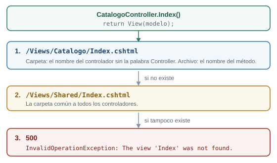
Dónde busca MVC la vista cuando el método ejecuta return View(modelo);.
Las vistas.
| Razor | Qué hace |
|---|---|
@model Producto |
Primera línea de la vista: el tipo del modelo que recibe |
@Model.Nombre |
El valor de una propiedad del modelo. Model va con mayúscula |
@foreach (var producto in Model) { ... } |
Repite su contenido por cada elemento de la lista |
@if (ViewBag.Error is not null) { ... } |
Muestra su contenido solo si se cumple la condición |
ViewBag.Error |
Un cajón donde el controlador deja un dato suelto para la vista |
asp-action="Detalle" asp-route-id="@producto.Id" |
Arma la dirección del enlace desde el nombre del método y su valor: /catalogo/1 |
<form method="post" asp-action="Confirmar"> |
Arma la dirección del formulario y agrega el token antifalsificación |
@* ... *@ |
Un comentario de Razor: no llega al navegador |
_ViewImports.cshtml vale para todas las vistas de su carpeta y sus subcarpetas. @using Plaza.Models te deja escribir Producto en una vista sin prefijo, y @addTagHelper activa los atributos asp-action, asp-route-id y los demás asp-*.
El formulario y el token. asp-action hace dos cosas en Pedir.cshtml. Arma action="/catalogo/pedir" y agrega el campo oculto del token. En el método Confirmar, el atributo [ValidateAntiForgeryToken] exige que el POST lo traiga: si falta, el servidor responde 400 sin ejecutar tu método. El servidor también deja una cookie y el navegador la devuelve solo; con curl tendrías que guardarla (-c) y enviarla (-b).
Por qué Confirmar. Hay un método Pedir que muestra el formulario con GET. El que lo recibe con POST se llama Confirmar y no Pedir a propósito: así asp-action nunca tiene que elegir entre dos acciones con el mismo nombre. No se probó qué dirección armaría con dos acciones Pedir, y por eso se evitó la duda.
Un detalle de los precios. La vista escribe $@Model.Precio y sale $3500, sin formato. Dar formato con N0 depende de la cultura del equipo y cambia de máquina a máquina, así que aquí no se formatea.
IActionResultes el tipo de lo que devuelve un método de controlador: una vista, unNotFound(), una redirección.nameof(Gracias)da el nombre"Gracias"como texto, pero el compilador lo comprueba: si renombras el método, te avisa.new { id = pedido.Id }es un objeto anónimo con los valores de la ruta. Aquí llena{id}decatalogo/gracias/{id:int}.ViewBagguarda datos sueltos con el nombre que le pongas:ViewBag.Error = error;.View("Pedir", nuevo)nombra la vista a usar, en vez de buscarla por el nombre del método.
Un olor que crece
Mira CatalogoController. Lee ProductosController.Lista y llama a PedidosController.Validar, Guardar y Todos. Tuvimos que volver public static cosas de PedidosController solo para que otro controlador las alcance. Ahora hay tres controladores que dependen unos de otros. La etapa 9 los desata.
Ejecutarlo
Abre http://localhost:5100/catalogo. Haz clic en Aguacate, luego en Pedir este producto, escribe un nombre y envía. Llegas a una página que dice Gracias, Rosa (tu nombre) y Tu pedido número 1 quedó guardado: 1 de Aguacate., y la dirección termina en /catalogo/gracias/1. Después abre /pedidos.html: el pedido está en la tabla, porque las dos páginas leen la misma lista.
Las peticiones, con su estado:
| Petición | Estado | Detalle |
|---|---|---|
GET /catalogo |
200 |
Los cuatro productos con enlaces /catalogo/1 a /catalogo/4 y sus precios: $3500, $6000, $2800 y $4500 |
GET /catalogo/2 |
200 |
Aguacate, Precio: $6000 y el enlace /catalogo/2/pedir |
GET /catalogo/99 |
404 |
vacío |
GET /catalogo/2/pedir |
200 |
El formulario method="post" action="/catalogo/pedir" con el campo oculto __RequestVerificationToken |
POST /catalogo/pedir sin token |
400 |
Rechazado por [ValidateAntiForgeryToken] |
POST /catalogo/pedir con token y cookie |
302 |
Location: /catalogo/gracias/1 |
GET /catalogo/gracias/1 |
200 |
Gracias, Ana y Tu pedido número 1 quedó guardado: 2 de Aguacate. |
POST /catalogo/pedir con token y Cliente= vacío |
200 |
Vuelve a mostrar el formulario con <p class="error">El nombre del cliente es obligatorio</p> |
El último caso muestra la diferencia con la etapa 7. Sin [ApiController], el texto vacío llega hasta Validar, y el controlador responde la misma vista con el mensaje en lugar de un 400.
Para ver el token en el HTML que sirve el servidor:
$ curl -s http://localhost:5100/catalogo/2/pedir
...
<form method="post" action="/catalogo/pedir">
<input type="hidden" name="Producto" value="Aguacate">
...
<button type="submit">Enviar pedido</button>
<input name="__RequestVerificationToken" type="hidden" value="CfDJ8Df8O3eJDQ5Ll..." /></form>
...
$ curl -i -d "Cliente=Ana&Producto=Aguacate&Cantidad=2" http://localhost:5100/catalogo/pedir
HTTP/1.1 400 Bad RequestRazor pone el token justo antes de </form>. Su valor es otro en cada carga de la página, y aquí se abrevió con tres puntos, igual que las líneas que se omitieron.
Qué pasó por dentro
Para GET /catalogo/2:
- El servidor encuentra la ruta
catalogo/{id:int}deCatalogoController.Detalley guardaid = 2. - Crea un
CatalogoControllery llama aDetalle(2). - El método busca el producto en la lista de
ProductosController. Lo encuentra y ejecutareturn View(producto);. - MVC busca
Views/Catalogo/Detalle.cshtml: carpeta igual al controlador, archivo igual al método. - Razor ejecuta la plantilla.
@Model.Nombrese reemplaza porAguacateyasp-route-id="@Model.Id"arma la dirección/catalogo/2/pedir. - La respuesta sale como
200con tipotext/html; charset=utf-8y la página terminada.
Compara con la etapa 4 de la guía de rutas: allí el HTML era un archivo fijo de wwwroot, y los datos llegaban después con fetch. Aquí el servidor arma la página con los datos adentro.
Falla provocada: una carpeta mal nombrada
Renombra la carpeta Views/Catalogo a Views/Catalogos. Detén el servidor y vuelve a ejecutarlo: compila y arranca. Pide /catalogo. El servidor responde 500 y la consola dice:
System.InvalidOperationException: The view 'Index' was not found. The following locations were searched:
/Views/Catalogo/Index.cshtml
/Views/Shared/Index.cshtmlEl mensaje lista los dos lugares donde buscó, los del dibujo de más arriba. Ninguno existe porque la carpeta se llama distinto. Devuelve el nombre Catalogo.
Retos de la etapa 8
En Index.cshtml, cambia el título para que diga Catálogo (4 productos). El número debe salir del modelo, sin escribirlo a mano.
El modelo es una List<Producto>, y las listas tienen la propiedad Count:
<h1>Catálogo (@Model.Count productos)</h1>Al abrir /catalogo el título dice Catálogo (4 productos). Si agregaras un producto a la lista, el título cambiaría solo. Los cambios en una vista también exigen reiniciar con dotnet run.
En Index.cshtml, agrega la palabra (económico) junto a los productos con precio menor a 4000.
Dentro del @foreach, después de la línea del precio:
@if (producto.Precio < 4000)
{
<span>(económico)</span>
}/catalogo marca a Tomate ($3500) y a Papa ($2800), y no marca a Aguacate ni a Panela. @if funciona igual que en C#, y lo que va entre llaves es HTML.
Cierre de la etapa 8
- Qué cambió: el servidor responde páginas HTML armadas con vistas Razor, además del JSON. Hay un
CatalogoController, una carpetaViewscon cuatro vistas y un formulario que trae su token antifalsificación. - Cómo verificarlo: recorre
/catalogo, el detalle, el formulario y la página de gracias, y revisa el token concurl. - Qué debes ver: las cuatro páginas con
200, un302al enviar el formulario, un400si el POST no trae token y el pedido en/pedidos.html. - Lo que falta, y de dónde sale la etapa 9: tres controladores se pasan listas y métodos
staticentre sí. Cada cambio en uno obliga a revisar los otros. La etapa 9 deja que cada controlador pida lo que necesita.
8 Etapa 9. Inyección de dependencias
Qué vas a lograr
Que cada controlador pida lo que necesita en su constructor y ASP.NET Core se lo entregue, en lugar de leer listas de otros controladores. Al terminar, cambias de dónde salen los productos con una sola línea de Program.cs y sin tocar ningún controlador.
La idea: la balanza del puesto
Un vendedor necesita una balanza para trabajar. No la fabrica: la plaza se la entrega, y a él le da igual la marca mientras pese. Eso es inyección de dependencias. Una clase declara lo que necesita, sus dependencias, y alguien más se las entrega ya armadas. Cuatro piezas hacen el trabajo:
| Pieza | Qué es | En la plaza |
|---|---|---|
Interfaz (ICatalogo) |
Un contrato: lista lo que un catálogo sabe hacer, sin decir cómo | “Una balanza pesa”, sin decir de qué marca |
Implementación (CatalogoEnMemoria) |
Una clase que cumple el contrato | Una balanza concreta |
| Constructor | Donde la clase pide lo que necesita, como parámetros | El vendedor dice qué balanza le hace falta |
| Contenedor de servicios | Quien arma las clases y entrega lo pedido, según lo que registraste en Program.cs |
El administrador de la plaza, que reparte las balanzas |
Un servicio es una clase que hace un trabajo para los controladores, como guardar pedidos o entregar productos.
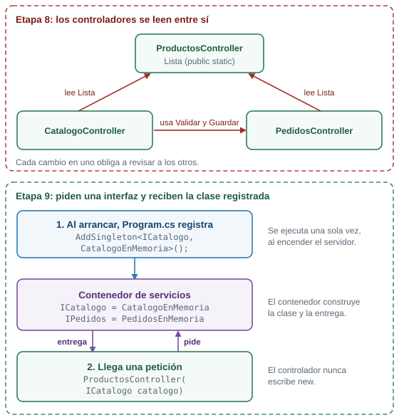
Arriba, la etapa 8: los controladores se leen entre sí. Abajo, la etapa 9: cada uno pide una interfaz y recibe la clase registrada.
Al final de la etapa vas a escribir una segunda clase, CatalogoConOferta, con precios rebajados un 10 %, y vas a cambiar una línea de Program.cs para usarla. ¿En cuántos archivos de controladores tendrás que cambiar código para que /api/productos y /catalogo muestren los precios nuevos?
En ninguno. Los controladores piden un ICatalogo, y no saben qué clase hay detrás. Si cambia la clase registrada, los tres controladores reciben la nueva sin cambiar una línea.
El código
Crea la carpeta Services y reemplaza los tres controladores. Los modelos, las vistas y wwwroot quedan igual, salvo una línea nueva en index.html.
Services/ICatalogo.cs, el contrato:
using Plaza.Models;
namespace Plaza.Services;
// El contrato: lo que cualquier catálogo sabe hacer. Quien lo use no sabe de dónde salen los productos.
public interface ICatalogo
{
List<Producto> Listar();
Producto? Buscar(int id);
bool Existe(string nombre);
}Services/CatalogoEnMemoria.cs, una clase que lo cumple:
using Plaza.Models;
namespace Plaza.Services;
// Una implementación del contrato: los productos viven en una lista dentro del programa.
public class CatalogoEnMemoria : ICatalogo
{
private readonly List<Producto> productos = new()
{
new(1, "Tomate", 3500m),
new(2, "Aguacate", 6000m),
new(3, "Papa", 2800m),
new(4, "Panela", 4500m),
};
public List<Producto> Listar()
{
return productos;
}
public Producto? Buscar(int id)
{
return productos.FirstOrDefault(p => p.Id == id);
}
public bool Existe(string nombre)
{
return productos.Any(p => p.Nombre == nombre);
}
}Services/IPedidos.cs:
using Plaza.Models;
namespace Plaza.Services;
public interface IPedidos
{
List<Pedido> Listar();
Pedido? Buscar(int id);
// Devuelve el mensaje de error, o null si el pedido es válido.
string? Validar(NuevoPedido nuevo);
Pedido Guardar(NuevoPedido nuevo);
}Services/PedidosEnMemoria.cs. Fíjate que también pide algo en su constructor: un ICatalogo.
using Plaza.Models;
namespace Plaza.Services;
public class PedidosEnMemoria : IPedidos
{
private readonly ICatalogo catalogo;
private readonly List<Pedido> pedidos = new();
// Este servicio también pide lo que necesita: ASP.NET Core arma primero el catálogo y se lo entrega.
public PedidosEnMemoria(ICatalogo catalogo)
{
this.catalogo = catalogo;
}
public List<Pedido> Listar()
{
return pedidos;
}
public Pedido? Buscar(int id)
{
return pedidos.FirstOrDefault(p => p.Id == id);
}
public string? Validar(NuevoPedido nuevo)
{
if (string.IsNullOrWhiteSpace(nuevo.Cliente))
{
return "El nombre del cliente es obligatorio";
}
if (!catalogo.Existe(nuevo.Producto))
{
return $"No vendemos {nuevo.Producto}";
}
if (nuevo.Cantidad < 1 || nuevo.Cantidad > 100)
{
return "La cantidad debe estar entre 1 y 100";
}
return null;
}
public Pedido Guardar(NuevoPedido nuevo)
{
var pedido = new Pedido(pedidos.Count + 1, nuevo.Cliente, nuevo.Producto, nuevo.Cantidad);
pedidos.Add(pedido);
return pedido;
}
}Controllers/ProductosController.cs, reemplaza el anterior. La lista public static desapareció:
using Microsoft.AspNetCore.Mvc;
using Plaza.Models;
using Plaza.Services;
namespace Plaza.Controllers;
[ApiController]
[Route("api/productos")]
public class ProductosController : ControllerBase
{
private readonly ICatalogo catalogo;
// El controlador pide un ICatalogo en el constructor y ASP.NET Core se lo entrega.
// No dice cuál catálogo es ni lo crea con new.
public ProductosController(ICatalogo catalogo)
{
this.catalogo = catalogo;
}
// GET /api/productos
[HttpGet]
public List<Producto> Listar()
{
return catalogo.Listar();
}
// GET /api/productos/2
[HttpGet("{id:int}")]
public IActionResult Obtener(int id)
{
var producto = catalogo.Buscar(id);
if (producto is null)
{
return NotFound(new { error = $"No existe el producto {id}" });
}
return Ok(producto);
}
// GET /buscar?q=to
[HttpGet("/buscar")]
public IEnumerable<Producto> Buscar(string? q)
{
var texto = q ?? "";
return catalogo.Listar().Where(p => p.Nombre.Contains(texto, StringComparison.OrdinalIgnoreCase));
}
}Controllers/PedidosController.cs, reemplaza el anterior. Ya no tiene lista, ni Validar, ni Guardar:
using Microsoft.AspNetCore.Mvc;
using Plaza.Models;
using Plaza.Services;
namespace Plaza.Controllers;
[ApiController]
public class PedidosController : ControllerBase
{
private readonly IPedidos pedidos;
public PedidosController(IPedidos pedidos)
{
this.pedidos = pedidos;
}
// GET /api/pedidos
[HttpGet("api/pedidos")]
public List<Pedido> Listar()
{
return pedidos.Listar();
}
// POST /api/pedidos con un JSON en el cuerpo.
[HttpPost("api/pedidos")]
public IActionResult CrearConJson(NuevoPedido nuevo)
{
var error = pedidos.Validar(nuevo);
if (error is not null)
{
return BadRequest(new { error });
}
var pedido = pedidos.Guardar(nuevo);
return Created($"/api/pedidos/{pedido.Id}", pedido);
}
// POST /pedidos/formulario con los campos del formulario HTML.
[HttpPost("pedidos/formulario")]
public IActionResult CrearConFormulario([FromForm] NuevoPedido nuevo)
{
var error = pedidos.Validar(nuevo);
if (error is not null)
{
return BadRequest(new { error });
}
pedidos.Guardar(nuevo);
return Redirect("/pedidos.html");
}
}Controllers/CatalogoController.cs, reemplaza el anterior. Ya no lee a otros controladores:
using Microsoft.AspNetCore.Mvc;
using Plaza.Models;
using Plaza.Services;
namespace Plaza.Controllers;
public class CatalogoController : Controller
{
private readonly ICatalogo catalogo;
private readonly IPedidos pedidos;
// Dos dependencias, dos parámetros. Ya no hay controladores que lean listas de otros controladores.
public CatalogoController(ICatalogo catalogo, IPedidos pedidos)
{
this.catalogo = catalogo;
this.pedidos = pedidos;
}
// GET /catalogo
[HttpGet("catalogo")]
public IActionResult Index()
{
return View(catalogo.Listar());
}
// GET /catalogo/2
[HttpGet("catalogo/{id:int}")]
public IActionResult Detalle(int id)
{
var producto = catalogo.Buscar(id);
if (producto is null)
{
return NotFound();
}
return View(producto);
}
// GET /catalogo/2/pedir
[HttpGet("catalogo/{id:int}/pedir")]
public IActionResult Pedir(int id)
{
var producto = catalogo.Buscar(id);
if (producto is null)
{
return NotFound();
}
return View(new NuevoPedido("", producto.Nombre, 1));
}
// POST /catalogo/pedir
[HttpPost("catalogo/pedir")]
[ValidateAntiForgeryToken]
public IActionResult Confirmar(NuevoPedido nuevo)
{
var error = pedidos.Validar(nuevo);
if (error is not null)
{
ViewBag.Error = error;
return View("Pedir", nuevo);
}
var pedido = pedidos.Guardar(nuevo);
return RedirectToAction(nameof(Gracias), new { id = pedido.Id });
}
// GET /catalogo/gracias/1
[HttpGet("catalogo/gracias/{id:int}")]
public IActionResult Gracias(int id)
{
var pedido = pedidos.Buscar(id);
if (pedido is null)
{
return NotFound();
}
return View(pedido);
}
}Program.cs, con el registro de los servicios:
// Etapa 9: los controladores piden lo que necesitan y el contenedor de servicios se lo entrega.
using Plaza.Services;
var builder = WebApplication.CreateBuilder(args);
builder.Services.AddControllersWithViews();
// Registro de servicios: "cuando alguien pida un ICatalogo, entrégale un CatalogoEnMemoria".
// AddSingleton: se crea una sola vez y todas las peticiones comparten esa instancia.
// Los pedidos viven dentro del servicio, así que tiene que ser uno solo; si fuera nuevo en cada petición, la lista nacería vacía.
builder.Services.AddSingleton<ICatalogo, CatalogoEnMemoria>();
builder.Services.AddSingleton<IPedidos, PedidosEnMemoria>();
// Ciclos de vida, para comparar en /diagnostico.
builder.Services.AddSingleton<ServicioSingleton>();
builder.Services.AddScoped<ServicioScoped>();
builder.Services.AddTransient<ServicioTransient>();
builder.Services.AddTransient<InformeDeCiclos>();
var app = builder.Build();
app.UseDefaultFiles();
app.UseStaticFiles();
app.MapControllers();
app.Run();Las cuatro últimas líneas de registro (ServicioSingleton, ServicioScoped, ServicioTransient e InformeDeCiclos) pertenecen a la demostración de ciclos de vida, que viene más abajo. Para que el proyecto compile con este Program.cs, crea desde ya sus dos archivos. El docente los explica en la demostración:
Services/CiclosDeVida.cs:
namespace Plaza.Services;
// Tres clases iguales: cada instancia que se crea tiene un identificador propio.
// Lo único que cambia es cómo se registra cada una en Program.cs.
public class ServicioSingleton
{
public string Id { get; } = Guid.NewGuid().ToString("N")[..6];
}
public class ServicioScoped
{
public string Id { get; } = Guid.NewGuid().ToString("N")[..6];
}
public class ServicioTransient
{
public string Id { get; } = Guid.NewGuid().ToString("N")[..6];
}
// Un segundo consumidor dentro de la misma petición, para comparar con lo que ve el controlador.
public class InformeDeCiclos
{
private readonly ServicioSingleton singleton;
private readonly ServicioScoped scoped;
private readonly ServicioTransient transient;
public InformeDeCiclos(ServicioSingleton singleton, ServicioScoped scoped, ServicioTransient transient)
{
this.singleton = singleton;
this.scoped = scoped;
this.transient = transient;
}
public object Ids()
{
return new { singleton = singleton.Id, scoped = scoped.Id, transient = transient.Id };
}
}Controllers/DiagnosticoController.cs:
using Microsoft.AspNetCore.Mvc;
using Plaza.Services;
namespace Plaza.Controllers;
// Muestra los identificadores de tres servicios con ciclos de vida distintos.
// Recarga /diagnostico varias veces y compara.
[ApiController]
public class DiagnosticoController : ControllerBase
{
private readonly ServicioSingleton singleton;
private readonly ServicioScoped scoped;
private readonly ServicioTransient transient;
private readonly InformeDeCiclos informe;
public DiagnosticoController(
ServicioSingleton singleton,
ServicioScoped scoped,
ServicioTransient transient,
InformeDeCiclos informe)
{
this.singleton = singleton;
this.scoped = scoped;
this.transient = transient;
this.informe = informe;
}
// GET /diagnostico
[HttpGet("diagnostico")]
public object Ver()
{
return new
{
controlador = new { singleton = singleton.Id, scoped = scoped.Id, transient = transient.Id },
otroServicio = informe.Ids()
};
}
}Y en wwwroot/index.html, agrega esta línea a la lista, después de la de Ver el catálogo:
<li><a href="/diagnostico">Diagnóstico de ciclos de vida</a></li>Cómo funciona
La interfaz. ICatalogo solo declara métodos, sin cuerpo: Listar(), Buscar(int id) y Existe(string nombre). Cualquier clase que diga : ICatalogo está obligada a escribir esos tres métodos. CatalogoEnMemoria los escribe con una lista dentro.
El constructor. ProductosController declara un campo private readonly ICatalogo catalogo; y un constructor con un parámetro ICatalogo catalogo. Cuando llega una petición, el framework necesita un ProductosController, ve que su constructor pide un ICatalogo y lo consigue en el contenedor. El controlador no escribe new ni sabe cuál clase recibió.
El registro. builder.Services.AddSingleton<ICatalogo, CatalogoEnMemoria>(); le dice al contenedor: “cuando alguien pida un ICatalogo, entrégale un CatalogoEnMemoria”.
Dependencias de dependencias. PedidosEnMemoria pide un ICatalogo en su constructor, para saber si un producto existe. Cuando un controlador pide un IPedidos, el contenedor arma primero el catálogo, se lo pasa a PedidosEnMemoria y entrega el servicio terminado. Tú solo registraste las dos parejas.
Por qué AddSingleton. AddSingleton crea una sola instancia y todas las peticiones la comparten. Los pedidos viven dentro de PedidosEnMemoria, así que tiene que ser una sola. Si el servicio naciera nuevo en cada petición, la lista de pedidos nacería vacía cada vez: la falla provocada de abajo lo muestra. Y aun siendo Singleton, los pedidos viven en la memoria del programa. Se pierden al detener el servidor. El tema de bases de datos con Entity Framework Core resuelve eso.
Lo que se logró. El olor de la etapa 7 desapareció: ningún controlador lee a otro. Validar y Guardar viven donde corresponde, en el servicio de pedidos, y los tres controladores se parecen entre sí: reciben interfaces y las usan.
public interface ICatalogo { ... }declara un contrato. Sus métodos no llevan cuerpo, solo la firma.public class CatalogoEnMemoria : ICatalogodice que la clase cumple el contrato. Si le falta un método del contrato, no compila.private readonly ICatalogo catalogo;es un campo: una variable que pertenece al objeto y que se asigna una sola vez, en el constructor.- El constructor es un método con el nombre de la clase y sin tipo de retorno.
this.catalogo = catalogo;copia el parámetro al campo:this.catalogoes el campo ycatalogoes el parámetro. Producto?como tipo de retorno significa “un producto onull”, comostring?en la guía de rutas.builder.Services.AddSingleton<ICatalogo, CatalogoEnMemoria>();usa dos tipos entre<y>: primero lo que se pide, después lo que se entrega.
Cambiar de implementación en una línea
Crea una segunda clase que cumple el mismo contrato, con los precios rebajados un 10 %:
Services/CatalogoConOferta.cs:
using Plaza.Models;
namespace Plaza.Services;
// Otra implementación del mismo contrato: todos los precios con 10 % de descuento.
// Para usarla basta cambiar una línea en Program.cs; ningún controlador se toca.
public class CatalogoConOferta : ICatalogo
{
private readonly List<Producto> productos = new()
{
new(1, "Tomate", 3150m),
new(2, "Aguacate", 5400m),
new(3, "Papa", 2520m),
new(4, "Panela", 4050m),
};
public List<Producto> Listar()
{
return productos;
}
public Producto? Buscar(int id)
{
return productos.FirstOrDefault(p => p.Id == id);
}
public bool Existe(string nombre)
{
return productos.Any(p => p.Nombre == nombre);
}
}En Program.cs, cambia CatalogoEnMemoria por CatalogoConOferta en la línea del catálogo:
builder.Services.AddSingleton<ICatalogo, CatalogoConOferta>();Detén el servidor, ejecútalo de nuevo y pide /api/productos:
$ curl -s http://localhost:5100/api/productos
[{"id":1,"nombre":"Tomate","precio":3150},{"id":2,"nombre":"Aguacate","precio":5400},{"id":3,"nombre":"Papa","precio":2520},{"id":4,"nombre":"Panela","precio":4050}]Los precios cambiaron en el JSON y también en /catalogo, porque la vista recibe lo que le da el mismo servicio (/catalogo/1 muestra Precio: $3150). Ningún controlador cambió. Esa es la ganancia de la inyección: la decisión de cuál clase usar vive en un solo lugar. Devuelve CatalogoEnMemoria para seguir.
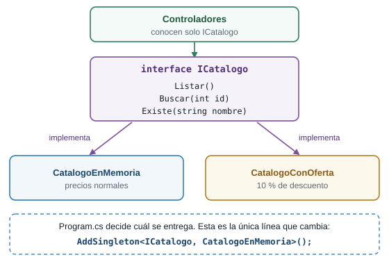
Una interfaz, dos implementaciones. Program.cs elige cuál se entrega.
Demostración del docente: ciclos de vida
La demostración la ejecuta el docente frente al grupo. No es un paso tuyo. El código ya lo tienes desde la sección anterior, así que puedes repetirla por tu cuenta.
Cuando registras un servicio decides también cuánto vive cada instancia. AddSingleton fue la primera de tres opciones:
| Registro | Cuánto vive la instancia |
|---|---|
AddSingleton |
Todo el proceso: una sola, compartida por todas las peticiones |
AddScoped |
Una petición: todos los consumidores de esa petición comparten una, y cada petición recibe la suya |
AddTransient |
Una entrega: cada vez que alguien la pide, se crea una nueva |
Para verlo, CiclosDeVida.cs tiene tres clases idénticas. Cada instancia que se crea recibe un identificador propio (Guid.NewGuid() recortado a seis caracteres). Lo único que las distingue es cómo se registran en Program.cs. InformeDeCiclos es un segundo consumidor dentro de la misma petición, para comparar con lo que ve el controlador. /diagnostico muestra los identificadores que reciben los dos.
Pide /diagnostico tres veces seguidas:
$ curl -s http://localhost:5100/diagnostico
{"controlador":{"singleton":"6bf7ed","scoped":"2bb4fd","transient":"2586f7"},"otroServicio":{"singleton":"6bf7ed","scoped":"2bb4fd","transient":"5c38f1"}}
$ curl -s http://localhost:5100/diagnostico
{"controlador":{"singleton":"6bf7ed","scoped":"f0ad1b","transient":"0eb97a"},"otroServicio":{"singleton":"6bf7ed","scoped":"f0ad1b","transient":"6e7725"}}
$ curl -s http://localhost:5100/diagnostico
{"controlador":{"singleton":"6bf7ed","scoped":"fbb6af","transient":"c1fe34"},"otroServicio":{"singleton":"6bf7ed","scoped":"fbb6af","transient":"f67164"}}Los identificadores cambian en cada ejecución. Lo que importa es qué se repite:
| Columna | Qué se ve | Por qué |
|---|---|---|
singleton |
El mismo en las tres peticiones y en los dos consumidores | Una sola instancia para todo el proceso |
scoped |
El mismo para el controlador y el otro servicio dentro de una petición, y distinto en cada petición | Una instancia por petición, compartida dentro de ella |
transient |
Distinto en todas partes, incluso entre el controlador y el otro servicio de la misma petición | Una instancia nueva en cada entrega |
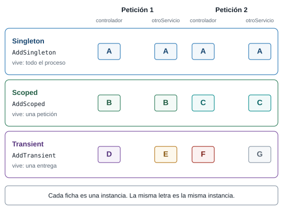
Cada ficha es una instancia. La misma letra es la misma instancia.
Fallas provocadas
Un servicio sin registrar. Comenta la línea builder.Services.AddSingleton<IPedidos, PedidosEnMemoria>(); (ponle // al comienzo). Detén el servidor y vuelve a ejecutarlo. Compila y arranca sin quejas. Pide /api/productos: responde 200, porque ese controlador solo necesita un ICatalogo. Pide /api/pedidos: responde 500 y la consola dice:
System.InvalidOperationException: Unable to resolve service for type 'Plaza.Services.IPedidos' while attempting to activate 'Plaza.Controllers.PedidosController'.El mensaje dice qué faltaba (IPedidos) y quién lo pedía (PedidosController). Igual que las rutas repetidas de la guía de rutas, el error no aparece al arrancar: aparece en la primera petición que usa ese controlador. Quita el //.
Un ciclo de vida equivocado. Cambia AddSingleton<IPedidos, PedidosEnMemoria>() por AddScoped<IPedidos, PedidosEnMemoria>(). Reinicia y envía un pedido:
$ curl -i -X POST -H "Content-Type: application/json" -d '{"cliente":"Luis","producto":"Papa","cantidad":3}' http://localhost:5100/api/pedidos
HTTP/1.1 201 Created
{"id":1,"cliente":"Luis","producto":"Papa","cantidad":3}
$ curl -s http://localhost:5100/api/pedidos
[]El POST responde 201 y el GET siguiente devuelve la lista vacía. Con AddScoped, cada petición recibe un PedidosEnMemoria nuevo, con su propia lista, que muere con la petición. Es el mismo síntoma de la falla de la etapa 7, con otra causa: la instancia no vive lo suficiente. Devuelve AddSingleton.
Retos de la etapa 9
Crea CatalogoDeTemporada, una implementación de ICatalogo con solo dos productos: Tomate (id 1, 3500m) y Papa (id 3, 2800m). Actívala cambiando una línea de Program.cs y predice qué responde /catalogo/2 y qué responde un pedido de Aguacate.
Crea Services/CatalogoDeTemporada.cs:
using Plaza.Models;
namespace Plaza.Services;
// Un catálogo más corto: solo lo que hay en temporada.
public class CatalogoDeTemporada : ICatalogo
{
private readonly List<Producto> productos = new()
{
new(1, "Tomate", 3500m),
new(3, "Papa", 2800m),
};
public List<Producto> Listar()
{
return productos;
}
public Producto? Buscar(int id)
{
return productos.FirstOrDefault(p => p.Id == id);
}
public bool Existe(string nombre)
{
return productos.Any(p => p.Nombre == nombre);
}
}Y registra builder.Services.AddSingleton<ICatalogo, CatalogoDeTemporada>();. /api/productos devuelve dos productos y /catalogo/2 responde 404. Un pedido de Aguacate responde 400 con {"error":"No vendemos Aguacate"}, aunque no tocaste PedidosEnMemoria: pregunta catalogo.Existe(...) y recibe el catálogo nuevo. Los dos servicios cambiaron de comportamiento por una sola línea.
En Program.cs, cambia AddScoped<ServicioScoped>() por AddTransient<ServicioScoped>(). Pide /diagnostico dos veces. Predice qué pasa con la columna scoped.
La columna scoped deja de repetirse dentro de la misma petición:
{"controlador":{"singleton":"6d1dd1","scoped":"0039a2","transient":"652828"},"otroServicio":{"singleton":"6d1dd1","scoped":"5e3d4e","transient":"30e3ca"}}El controlador y el otro servicio reciben identificadores scoped distintos, como si fuera transient. La clase ServicioScoped no cambió: el ciclo de vida lo decide el registro, no la clase. Devuelve AddScoped.
Cierre de la etapa 9
- Qué cambió: hay una carpeta
Servicescon dos interfaces y sus implementaciones. Los tres controladores reciben servicios por el constructor yProgram.cslos registra conAddSingleton. - Cómo verificarlo: repite las peticiones de las etapas 6 a 8, cambia el catálogo a
CatalogoConOfertay pide/diagnostico. - Qué debes ver: los mismos resultados de las etapas anteriores, otros precios al cambiar de implementación y los tres comportamientos en
/diagnostico. - Lo que falta, y de dónde sale la etapa 10: tu servidor ordena sus piezas, pero no controla lo que le pasa a toda petición antes de llegar a una ruta. ¿Cómo anotas cada petición que entra, o cierras
/admina quien no tiene clave, sin copiar código en cada controlador? La etapa 10 responde eso.
9 Etapa 10. Middleware
Qué vas a lograr
Que toda petición pase por piezas tuyas antes de llegar a una ruta. Escribes dos: una que anota cada petición con el tiempo que tardó, y una portería que corta el paso a /admin si no traen la clave. Primero las escribes en línea, dentro de Program.cs (parte A), y después como clases, con un servicio inyectado (parte B).
La idea: los controles de la entrada
Antes de llegar a un puesto, todo comprador pasa por controles: alguien anota quién entra, y alguien en la portería decide si lo deja seguir. Ninguno vende nada y todos ven a todos. Un middleware es una de esas piezas: una función por la que pasa toda petición, que puede mirarla, cambiarla, responderla ella misma o entregársela a la siguiente. La cadena completa de piezas se llama pipeline.
Cada middleware recibe dos cosas: el HttpContext (la petición y la respuesta de este momento) y next, el siguiente paso de la cadena. Hay dos decisiones posibles:
- Llamar a
next. La petición sigue. Lo que el middleware escribió antes de llamarlo se ejecuta a la ida. Lo que escribió después se ejecuta a la vuelta, cuando la respuesta ya está lista. - No llamar a
next. El middleware responde él mismo y la petición se corta: nada más abajo se ejecuta. Es un cortocircuito.
Pones un middleware de registro como primera pieza del pipeline. Pides /noexiste, una dirección que ninguna ruta atiende y que responde 404. ¿Se imprime la línea de vuelta del registro? Si se imprime, ¿con qué estado?
Se imprime, y dice 404. El 404 es una respuesta como cualquier otra: nace más abajo, vuelve por el mismo camino y el registro la ve pasar antes de que salga hacia el navegador. Verás -> GET /noexiste y <- 404 en 0 ms en la consola.
Parte A. Middleware en línea
El código
Reemplaza Program.cs y crea Controllers/AdminController.cs. Si dejaste CatalogoConOferta.cs de la etapa 9, puede quedarse: no estorba.
Program.cs:
// Etapa 10 (parte A): middleware en línea. Cada app.Use es un paso por el que pasa TODA petición.
using System.Diagnostics;
using Plaza.Services;
var builder = WebApplication.CreateBuilder(args);
builder.Services.AddControllersWithViews();
builder.Services.AddSingleton<ICatalogo, CatalogoEnMemoria>();
builder.Services.AddSingleton<IPedidos, PedidosEnMemoria>();
builder.Services.AddSingleton<ServicioSingleton>();
builder.Services.AddScoped<ServicioScoped>();
builder.Services.AddTransient<ServicioTransient>();
builder.Services.AddTransient<InformeDeCiclos>();
var app = builder.Build();
// Middleware 1: registro. Lo que escribe antes de next se ejecuta a la ida; lo que escribe después, a la vuelta.
app.Use(async (context, next) =>
{
var reloj = Stopwatch.StartNew();
Console.WriteLine($"-> {context.Request.Method} {context.Request.Path}");
// Entrega la petición al siguiente paso y espera a que la respuesta esté lista.
await next(context);
Console.WriteLine($"<- {context.Response.StatusCode} en {reloj.ElapsedMilliseconds} ms");
});
// Middleware 2: la puerta de /admin. Si falta la clave, responde aquí y NO llama a next:
// la petición se corta y nunca llega a los pasos siguientes.
// Es una demostración del cortocircuito, no seguridad real: una clave en la dirección se puede ver y copiar.
app.Use(async (context, next) =>
{
var esAdmin = context.Request.Path.StartsWithSegments("/admin");
if (esAdmin && context.Request.Query["clave"] != "plaza")
{
context.Response.StatusCode = StatusCodes.Status401Unauthorized;
await context.Response.WriteAsync("Falta la clave");
return;
}
await next(context);
});
// UseDefaultFiles y UseStaticFiles también son middleware: ya usabas dos sin saberlo.
app.UseDefaultFiles();
app.UseStaticFiles();
app.MapControllers();
app.Run();Controllers/AdminController.cs, una ruta nueva que la portería va a proteger:
using Microsoft.AspNetCore.Mvc;
using Plaza.Services;
namespace Plaza.Controllers;
[ApiController]
public class AdminController : ControllerBase
{
private readonly ICatalogo catalogo;
private readonly IPedidos pedidos;
public AdminController(ICatalogo catalogo, IPedidos pedidos)
{
this.catalogo = catalogo;
this.pedidos = pedidos;
}
// GET /admin/resumen?clave=plaza
[HttpGet("admin/resumen")]
public object Resumen()
{
return new
{
productos = catalogo.Listar().Count,
pedidos = pedidos.Listar().Count
};
}
}Y en wwwroot/index.html, agrega esta línea a la lista, después de la de Diagnóstico:
<li><a href="/admin/resumen?clave=plaza">Resumen de administración (clave en la dirección)</a></li>Lo que hace cada parte de Program.cs:
app.Use(async (context, next) => { ... });agrega una pieza al pipeline. Cadaapp.Usequeda detrás de los anteriores.- Primera pieza, el registro. Arranca un cronómetro (
Stopwatch.StartNew()), imprime-> GET /ruta(la ida), llama aawait next(context)y, cuando la respuesta vuelve, imprime<- 200 en 40 ms(la vuelta). - Segunda pieza, la portería. Revisa si la ruta empieza por
/adminy si laclavedel query string no esplaza. Si es así, responde401con el textoFalta la clavey ejecutareturn;sin llamar anext: la petición se corta aquí. Si no, llama anexty sigue. UseDefaultFilesyUseStaticFilesvienen de la guía de rutas, y ya eran middleware sin que lo supieras. Quedan después del registro y de la portería.
Una clave que viaja en la dirección se ve en la barra, en el historial y en cualquier enlace que copies. Esta portería existe para ver un cortocircuito, no para proteger nada. La autenticación real no hace parte de esta guía.
asyncyawaitpermiten esperar algo que tarda, como la respuesta de la siguiente pieza, sin detener el servidor.await next(context)significa “entrégale la petición a la siguiente pieza y espera a que termine”.(context, next) => { ... }es una lambda con dos parámetros.contextes elHttpContextynextes el siguiente paso.context.Request.Methodycontext.Request.Pathdan el método (GET) y la ruta (/admin/resumen). La consulta, como?clave=plaza, no forma parte dePath.context.Request.Path.StartsWithSegments("/admin")pregunta si la ruta empieza por el segmentoadmin.context.Request.Query["clave"]lee un valor del query string.StatusCodes.Status401Unauthorizedes el número401con un nombre legible.await context.Response.WriteAsync("...")escribe un texto en el cuerpo de la respuesta.Stopwatch.StartNew()arranca un cronómetro;reloj.ElapsedMillisecondsda los milisegundos que pasaron.return;dentro de la lambda termina la pieza sin llamar anext.
Ejecutarlo
Ejecuta el servidor, pide estas direcciones y mira la consola:
| Petición | Estado | Detalle |
|---|---|---|
GET /api/productos |
200 |
la lista de productos |
GET /admin/resumen |
401 |
Falta la clave |
GET /admin/resumen?clave=x |
401 |
Falta la clave |
GET /admin/resumen?clave=plaza |
200 |
{"productos":4,"pedidos":0} |
GET /noexiste |
404 |
vacío |
GET /estilos.css |
200 |
el archivo de estilos |
La consola escribe una línea de ida y otra de vuelta por petición, incluso para el 401 y el 404. Los milisegundos cambian en cada ejecución, y la primera petición es más lenta:
-> GET /api/productos
<- 200 en 41 ms
-> GET /admin/resumen
<- 401 en 0 ms
-> GET /admin/resumen
<- 401 en 2 ms
-> GET /admin/resumen
<- 200 en 4 ms
-> GET /noexiste
<- 404 en 0 ms
-> GET /estilos.css
<- 200 en 9 msFíjate en lo que ya mostró el registro: anota la ruta (/admin/resumen) pero no la clave, porque Path no incluye el query string, y anota el 401 a pesar de que la portería cortó la petición. La portería está después del registro, así que el registro ve pasar de regreso el 401 de la portería.
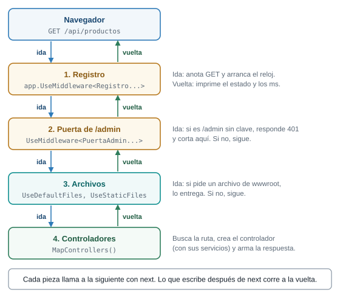
La petición baja por las piezas y la respuesta sube por las mismas.
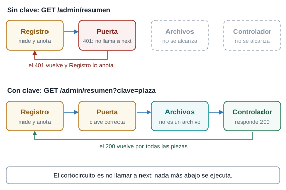
Sin clave, la portería responde y la petición no llega ni a los archivos ni al controlador.
El orden importa
El orden de las líneas de Program.cs es el orden del pipeline. Dos experimentos lo muestran. Después de cada uno, devuelve Program.cs a su forma original.
Experimento 1: los archivos antes del registro. Mueve app.UseDefaultFiles(); y app.UseStaticFiles(); a una posición anterior al primer app.Use. Reinicia y pide /estilos.css y /api/productos. En la consola solo aparece la segunda:
-> GET /api/productos
<- 200 en 35 ms/estilos.css no deja ninguna línea. UseStaticFiles responde el archivo y no llama a next: la petición se corta ahí y nunca llega al registro. Desde la guía de rutas, los archivos estáticos hacen un cortocircuito propio.
Experimento 2: la portería antes del registro. Cambia de lugar los dos app.Use, de modo que la portería quede primero. Pide /admin/resumen sin clave y después con ?clave=plaza. La primera responde 401 y no deja ninguna línea en la consola. La segunda responde 200 y deja las dos:
-> GET /admin/resumen
<- 200 en 28 msCon la portería primero, el corte ocurre antes de que el registro vea la petición. Lo que un middleware ve depende de qué piezas lo preceden.
Falla provocada: olvidar next
Borra la línea await next(context); del registro (la primera pieza). Detén el servidor y vuelve a ejecutarlo. No compila. El error aparece en la línea de app.Use(, no en la que borraste:
error CS0121: La llamada es ambigua entre los métodos o las propiedades siguientes: 'Microsoft.AspNetCore.Builder.UseExtensions.Use(Microsoft.AspNetCore.Builder.IApplicationBuilder, System.Func<Microsoft.AspNetCore.Http.HttpContext, System.Func<System.Threading.Tasks.Task>, System.Threading.Tasks.Task>)' y 'Microsoft.AspNetCore.Builder.UseExtensions.Use(Microsoft.AspNetCore.Builder.IApplicationBuilder, System.Func<Microsoft.AspNetCore.Http.HttpContext, Microsoft.AspNetCore.Http.RequestDelegate, System.Threading.Tasks.Task>)'app.Use tiene dos versiones: una donde next se llama sin argumentos (next()) y otra donde recibe el contexto (next(context)). Con await next(context); el compilador sabe cuál quieres. Sin esa línea, tu lambda encaja en las dos y no puede elegir. Devuelve la línea.
Parte B. Middleware como clase
Dos piezas de una línea caben en Program.cs. Cuando una pieza crece, o necesita servicios, conviene darle su propia clase. El comportamiento es el mismo, con dos novedades: el siguiente paso llega por el constructor, y la clase también puede pedir servicios, igual que un controlador en la etapa 9.
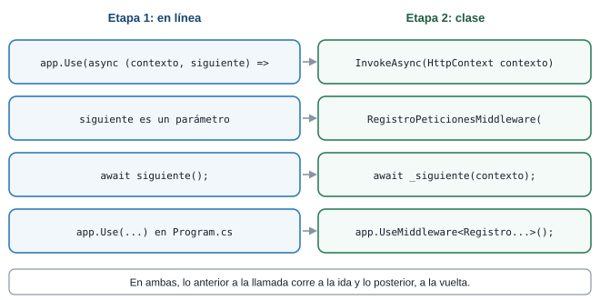
El mismo middleware, de las dos formas.
El código
Crea la carpeta Middleware con dos archivos y reemplaza Program.cs. AdminController queda igual.
Middleware/RegistroPeticionesMiddleware.cs:
using System.Diagnostics;
namespace Plaza.Middleware;
// El mismo registro de la parte A, ahora como clase propia.
public class RegistroPeticionesMiddleware
{
private readonly RequestDelegate siguiente;
private readonly ILogger<RegistroPeticionesMiddleware> logger;
// El constructor recibe el siguiente paso (lo da ASP.NET Core) y los servicios que pida, igual que un controlador.
public RegistroPeticionesMiddleware(RequestDelegate siguiente, ILogger<RegistroPeticionesMiddleware> logger)
{
this.siguiente = siguiente;
this.logger = logger;
}
// ASP.NET Core llama a este método con cada petición.
public async Task InvokeAsync(HttpContext context)
{
var reloj = Stopwatch.StartNew();
logger.LogInformation("-> {Metodo} {Ruta}", context.Request.Method, context.Request.Path);
await siguiente(context);
logger.LogInformation("<- {Estado} en {Ms} ms", context.Response.StatusCode, reloj.ElapsedMilliseconds);
}
}Middleware/PuertaAdminMiddleware.cs:
namespace Plaza.Middleware;
// La puerta de /admin de la parte A, como clase. Demostración del cortocircuito, no seguridad real.
public class PuertaAdminMiddleware
{
private readonly RequestDelegate siguiente;
public PuertaAdminMiddleware(RequestDelegate siguiente)
{
this.siguiente = siguiente;
}
public async Task InvokeAsync(HttpContext context)
{
var esAdmin = context.Request.Path.StartsWithSegments("/admin");
if (esAdmin && context.Request.Query["clave"] != "plaza")
{
context.Response.StatusCode = StatusCodes.Status401Unauthorized;
await context.Response.WriteAsync("Falta la clave");
return;
}
await siguiente(context);
}
}Program.cs, el pipeline completo del proyecto:
// Etapa 10 (parte B): el pipeline completo del proyecto, con el middleware en clases.
using Plaza.Middleware;
using Plaza.Services;
var builder = WebApplication.CreateBuilder(args);
builder.Services.AddControllersWithViews();
builder.Services.AddSingleton<ICatalogo, CatalogoEnMemoria>();
builder.Services.AddSingleton<IPedidos, PedidosEnMemoria>();
builder.Services.AddSingleton<ServicioSingleton>();
builder.Services.AddScoped<ServicioScoped>();
builder.Services.AddTransient<ServicioTransient>();
builder.Services.AddTransient<InformeDeCiclos>();
var app = builder.Build();
// El orden de estas líneas es el orden del pipeline: la petición pasa por ellas de arriba abajo.
app.UseMiddleware<RegistroPeticionesMiddleware>();
app.UseMiddleware<PuertaAdminMiddleware>();
app.UseDefaultFiles();
app.UseStaticFiles();
app.MapControllers();
app.Run();RequestDelegate siguientees elnextde la parte A, entregado por el constructor. Lo llamaawait siguiente(context);.InvokeAsync(HttpContext context)es el método que ASP.NET Core llama con cada petición. Su cuerpo es el de la lambda.ILogger<RegistroPeticionesMiddleware> loggeres un servicio que el registro pide en su constructor, y el contenedor se lo entrega: la misma inyección de la etapa 9, ahora en un middleware. Reemplaza aConsole.WriteLine.app.UseMiddleware<RegistroPeticionesMiddleware>();agrega la clase al pipeline, en el lugar donde escribas la línea.logger.LogInformation("-> {Metodo} {Ruta}", ...)escribe un mensaje de nivel informativo. Lo que va entre llaves son marcadores que se llenan con los valores que siguen.
ILogger<T>es el servicio de mensajes del framework. El tipoT(aquí el nombre de la clase) aparece en cada línea que escribe, para saber quién la generó.{Metodo}y{Ruta}en un mensaje deLogInformationson marcadores, no una cadena interpolada: no llevan$. Los valores se pasan después, en orden.Taskes el tipo de lo que devuelve un métodoasync: una operación que puede tardar.
Ejecutarlo
Ejecuta el servidor y repite las peticiones de la parte A. Los estados son los mismos: 401 sin clave, 200 con clave=plaza. Cambia la forma de la consola, porque ahora escribe el servicio de mensajes del framework:
info: Plaza.Middleware.RegistroPeticionesMiddleware[0]
-> GET /
info: Plaza.Middleware.RegistroPeticionesMiddleware[0]
<- 200 en 20 ms
info: Plaza.Middleware.RegistroPeticionesMiddleware[0]
-> GET /admin/resumen
info: Plaza.Middleware.RegistroPeticionesMiddleware[0]
<- 401 en 0 ms
info: Plaza.Middleware.RegistroPeticionesMiddleware[0]
-> GET /admin/resumen
info: Plaza.Middleware.RegistroPeticionesMiddleware[0]
<- 200 en 31 msCada línea trae el nivel (info), la clase que la escribió y el número de evento ([0]), y debajo el mensaje. El número 0 es el evento por defecto.
Qué pasó por dentro
Para GET /admin/resumen?clave=plaza en el pipeline completo:
- El navegador envía la petición.
RegistroPeticionesMiddleware.InvokeAsyncarranca el cronómetro, escribe-> GET /admin/resumeny llama asiguiente.PuertaAdminMiddlewareve que la ruta es de/adminy que la clave esplaza. Llama asiguiente.UseDefaultFilesyUseStaticFilesno encuentran ningún archivo con esa ruta, así que siguen.MapControllersencuentraadmin/resumen. Crea unAdminControllercon su catálogo y su servicio de pedidos inyectados, y responde{"productos":4,"pedidos":0}.- La respuesta sube por las mismas piezas. Al llegar al registro, este escribe
<- 200 en 31 msy la respuesta sale hacia el navegador.
Sin clave, el paso 3 responde 401 y no llama a siguiente. Los pasos 4 y 5 no ocurren. El registro, que está antes, igual ve pasar el 401 en el paso 6.
Retos de la etapa 10
En la parte A, agrega un middleware que ponga el encabezado X-Plaza: abierta en todas las respuestas. Compruébalo con curl -i en dos direcciones distintas.
Agrega este app.Use antes de UseDefaultFiles:
app.Use(async (context, next) =>
{
context.Response.Headers["X-Plaza"] = "abierta";
await next(context);
});Fija el encabezado a la ida, antes de llamar a next. Con curl -i http://localhost:5100/api/productos aparece X-Plaza: abierta entre los encabezados, y también en cualquier otra dirección que pidas. Un encabezado se escribe antes de que la respuesta empiece a enviarse, y por eso va antes de next.
En la parte A, agrega una pieza que responda 503 con el texto Catálogo cerrado por inventario a toda ruta que empiece por /catalogo, y que deje pasar las demás. Predice qué responde /catalogo/1 y qué responde /api/productos.
Es el mismo cortocircuito de la portería de /admin, con otra condición:
app.Use(async (context, next) =>
{
if (context.Request.Path.StartsWithSegments("/catalogo"))
{
context.Response.StatusCode = StatusCodes.Status503ServiceUnavailable;
await context.Response.WriteAsync("Catálogo cerrado por inventario");
return;
}
await next(context);
});Ponla antes de UseDefaultFiles. /catalogo y /catalogo/1 responden 503 con ese texto, porque la pieza corta la petición y el controlador nunca se ejecuta. /api/productos responde 200: la condición no se cumple y la pieza llama a next.
El pipeline completo
Con la parte B terminada, Program.cs declara el pipeline entero. De arriba abajo, esa es la cadena que recorre toda petición:
| Orden | Pieza | Qué hace | Quién la puso |
|---|---|---|---|
| 1 | UseMiddleware<RegistroPeticionesMiddleware>() |
Anota la ida y la vuelta de cada petición | Etapa 10 |
| 2 | UseMiddleware<PuertaAdminMiddleware>() |
Corta /admin si falta la clave |
Etapa 10 |
| 3 | UseDefaultFiles() |
Convierte / en /index.html |
La guía de rutas |
| 4 | UseStaticFiles() |
Entrega los archivos de wwwroot |
La guía de rutas |
| 5 | MapControllers() |
Lleva la petición al controlador que declaró la ruta | Etapa 7 |
Las piezas 3 y 4 son las mismas dos líneas que escribiste en la etapa 4 de la guía de rutas. Ya eras usuario de middleware sin saberlo. El pipeline real de ASP.NET Core tiene además piezas internas que no escribes tú: aquí el pipeline es lo que lees en Program.cs.
Cierre de la etapa 10
- Qué cambió: todas las peticiones pasan por un registro y por una portería, primero escritos en línea y luego como clases. Hay un
AdminControllercon una ruta protegida. - Cómo verificarlo: pide
/api/productos,/admin/resumencon y sin clave,/noexistey/estilos.css, y mira la consola. - Qué debes ver:
401sin clave y200conclave=plaza, una línea de ida y otra de vuelta para cada petición que llega al registro, y ninguna para/estilos.csssi moviste los archivos antes del registro.
10 El mapa completo: el recorrido de una petición
Este es el hilo de toda la guía, de principio a fin. Sigue una petición, GET /catalogo/2, desde que sale del navegador hasta que vuelve convertida en página:
![De arriba abajo, el recorrido de GET /catalogo/2. El navegador envía la petición. Los middleware (etapa 10) la reciben: registro, puerta y archivos. La ruta con atributo HttpGet (etapa 7) elige el método. El controlador CatalogoController (etapas 7 y 8) pide el servicio ICatalogo, que el contenedor le inyecta (etapa 9). El servicio entrega el modelo Producto (etapa 7). La vista Detalle.cshtml (etapa 8), o un JSON, arma la respuesta. La respuesta 200 vuelve por los middleware hasta el navegador. Los formularios con POST (etapa 6) siguen el mismo camino.](imagenes/mapa-pipeline-completo.svg)
El pipeline completo de Plaza, con la etapa en que nació cada pieza.
Cada pieza responde una pregunta distinta:
| Pieza | Pregunta que responde | En la plaza | Etapa |
|---|---|---|---|
| Petición | ¿Qué pide el cliente y cómo? (método, dirección, cuerpo) | El comprador que llega y dice qué quiere | 6 |
| Middleware | ¿Qué le pasa a toda petición antes de la ruta? | Los controles de la entrada: registro y portería | 10 |
| Ruta | ¿Qué método atiende esta dirección? | El pasillo | 7 |
| Controlador | ¿Qué hago con lo que piden? | El vendedor que atiende | 7 y 8 |
| Servicio inyectado | ¿Quién me entrega los datos o hace el trabajo? | La balanza que le dan al puesto | 9 |
| Modelo | ¿Qué forma tiene el dato? | La ficha del producto | 7 |
| Vista o JSON | ¿Cómo se lo muestro al cliente? | El letrero, o la lista en papel | 8 |
| Respuesta | ¿Cómo le fue al servidor? (estado, tipo y cuerpo) | La bolsa con su etiqueta, y la cara del vendedor | 6 |
Un formulario con POST sigue el mismo camino: el controlador recibe el cuerpo en lugar de la dirección, y el POST termina en un 302 que lo manda a un GET. En la guía de rutas armaste la ruta y la respuesta. Aquí sumaste lo que la rodea.
Lo que queda abierto, y dónde se cierra
| Tema | Dónde quedó en esta guía | Dónde se cierra |
|---|---|---|
| Layout y vistas parciales | Las cuatro vistas repiten su HTML completo | El tema de Razor con layouts y vistas parciales |
| Validaciones con atributos y mensajes en el navegador | La validación es una función Validar que escribes tú, más lo que hace [ApiController] |
El tema de validaciones |
| Base de datos | Los datos viven en la memoria y se pierden al detener el servidor | El tema de bases de datos con Entity Framework Core |
| Autenticación real | La clave de /admin va en la dirección y solo muestra el cortocircuito |
No está en los temas del curso |
11 Errores que te van a pasar
Cada uno de estos tropiezos apareció de verdad al preparar el material. Los errores de la guía de rutas siguen valiendo: reiniciar tras cambiar código, el puerto ocupado y las tildes rotas con curl.
| Qué ves | Por qué pasa | Cómo se arregla |
|---|---|---|
500 al enviar un formulario, y la consola dice contains anti-forgery metadata (etapa 6) |
Una ruta con [FromForm] exige el token antifalsificación y un formulario de wwwroot no puede traerlo |
La ruta lleva .DisableAntiforgery(). La solución de fondo es la etapa 8: Razor agrega el token solo |
400 Bad Request con el cuerpo vacío al enviar un formulario (etapa 6) |
El servidor no pudo armar el NuevoPedido: un campo no tiene name y no viaja, o un valor no encaja con su tipo, como cantidad=abc para un int. Ni siquiera llegó a tu Validar |
Revisa que cada campo tenga name y que coincida con una propiedad del modelo |
415 Unsupported Media Type al enviar JSON con curl (etapa 6) |
curl -d envía por defecto el formato de un formulario y la ruta espera JSON |
Agrega -H "Content-Type: application/json" |
El pedido responde 201 y la lista aparece vacía, o los pedidos de antes ya no están (etapas 6, 7 y 9) |
Tres causas: detuviste el servidor, y los datos viven en la memoria; la lista está dentro de un controlador sin static, y el framework crea un controlador nuevo en cada petición; el servicio está con AddScoped, y cada petición recibe uno nuevo |
static en la etapa 7 y AddSingleton en la etapa 9. El tema de bases de datos con Entity Framework Core guarda los datos en una base de datos |
400 al enviar un POST a /catalogo/pedir con curl, aunque desde el navegador funciona (etapa 8) |
Confirmar tiene [ValidateAntiForgeryToken] y tu curl no trae el token ni la cookie |
Prueba esa ruta desde el navegador. Con curl, pide primero el formulario guardando la cookie (-c) y envía el token y la cookie (-b) |
500 y la consola dice The view 'Index' was not found (etapa 8) |
MVC no encontró Views/<Controlador>/<Método>.cshtml ni Views/Shared/<Método>.cshtml: el nombre de la carpeta o del archivo no coincide |
Compara los nombres con los dos lugares que lista el mensaje |
El servidor arranca, pero una petición responde 500 con Unable to resolve service for type (etapa 9) |
Un controlador pide un servicio que no registraste en Program.cs. El error aparece en la primera petición que usa ese controlador, no al arrancar |
Agrega la línea de registro que falta, por ejemplo AddSingleton<IPedidos, PedidosEnMemoria>() |
No compila: error CS0121: La llamada es ambigua en la línea de app.Use( (etapa 10) |
Falta await next(context); y el compilador no sabe cuál de las dos versiones de app.Use quieres |
Llama a await next(context); en toda ruta de la lambda que no corte la petición |
La consola no escribe ninguna línea para /estilos.css (etapa 10) |
UseStaticFiles está antes del registro y responde sin llamar a next. Las piezas que van después no ven la petición |
Pon el registro antes de los archivos estáticos. La pieza que corta decide quién se queda sin ver la petición |
Editaste una página de wwwroot y el navegador muestra la versión anterior |
El navegador guardó una copia. En la prueba, curl ya mostraba el cambio mientras el navegador seguía con la versión vieja |
Recarga sin la copia guardada con Ctrl+F5. Para ver lo que entrega el servidor, usa curl |
12 Qué se probó y qué no
Los comandos y las salidas de esta guía se ejecutaron en una máquina con Windows 11 y el SDK 10.0.302, con curl desde Git Bash. Cada etapa se ejecutó con dotnet run --no-launch-profile --urls http://localhost:5100, que deja el entorno en Production: un error sin controlar responde 500 sin detalle y el motivo solo aparece en la consola. Las seis carpetas de código (etapa-6 a etapa-10b) compilan con 0 advertencias y 0 errores. Se probó cada etapa con curl, las fallas provocadas de cada etapa (el token antifalsificación, la lista sin static, la vista no encontrada, el servicio sin registrar, el ciclo de vida AddScoped, el cambio de implementación, el orden del pipeline y el error de compilación al olvidar next) y los retos con sus soluciones. Las páginas de la etapa 6 y el recorrido del catálogo de la etapa 8 se abrieron en un navegador automatizado.
No se probó: PowerShell como terminal (todo se hizo con Git Bash); los navegadores de los estudiantes, Firefox, Safari ni un teléfono con las páginas de las etapas; dotnet watch con cambios en controladores y vistas (todas las pruebas fueron con dotnet run); una cultura distinta de la del equipo de pruebas, que puede cambiar cómo se escribe un precio; y qué dirección armaría asp-action con dos acciones llamadas igual, por eso la acción de envío se llama Confirmar. Cuando algo no se probó, la guía lo dice.
13 Preguntas para comprobar
Para comprobar lo que aprendiste, responde con tus palabras. Si alguna se te enreda, vuelve a la etapa que se indica.
- ¿En qué se diferencian GET y POST: dónde viaja el dato y para qué usarías cada uno? (etapa 6)
- ¿Qué hace el atributo
namede un campo de formulario y qué pasa si falta? (etapa 6) - ¿Qué es Post/Redirect/Get, qué estado usa y qué problema evita? (etapa 6)
- ¿Cuándo responde una ruta que recibe un pedido
201,302,400o415? (etapa 6) - ¿Qué hacen
AddControllersyMapControllers, y por qué las páginas dewwwrootno cambiaron al pasar a controladores? (etapa 7) - ¿Por qué la lista de pedidos del controlador de la etapa 7 es
static, y qué pasa si no lo es? (etapa 7) - ¿Qué pieza de MVC es el modelo, cuál el controlador y cuál la vista, y qué hace cada una por un
GET /catalogo/2? (etapas 7 y 8) - ¿Cómo encuentra MVC la vista de
return View(modelo);y qué error ves si no está? (etapa 8) - ¿Qué agrega Razor a un formulario con
asp-actiony qué exige[ValidateAntiForgeryToken]? (etapa 8) - ¿Qué problema resuelve la inyección de dependencias, y cómo cambias
CatalogoEnMemoriapor otra clase sin tocar un controlador? (etapa 9) - ¿En qué se diferencian
AddSingleton,AddScopedyAddTransient, y cuál usaste para los pedidos y por qué? (etapa 9) - ¿Qué es un middleware, qué significa llamar o no llamar a
next, y por qué importa el orden? (etapa 10) - ¿Por qué
UseDefaultFilesyUseStaticFilesya eran middleware desde la guía de rutas? (etapa 10) - Dibuja de memoria el recorrido de
GET /catalogo/2: de qué pieza a cuál pasa la petición y por dónde vuelve la respuesta. (el mapa completo)
14 Trabajo independiente
Esta es la parte 2: sobre el mismo proyecto del trabajo independiente. La parte 1, rutas y respuestas, está en la guía de rutas. El pacto pide un servidor del proyecto respondiendo a sus rutas base: la parte 1 lo empezó y esta parte lo termina. Trabaja sobre el mismo proyecto, el servidor de tu tema que ya tiene sus rutas, su JSON y su página. Este trabajo no tiene porcentaje.
- Un formulario con POST que cree un registro de tu tema (un pedido, una reserva, un producto, lo que corresponda a tu proyecto). Una página en
wwwrootconmethod="post"y una ruta POST que valide. Si el dato está mal, responde400con un mensaje. Si está bien, responde201(si lo envíafetch) o redirige con302(si lo envía el formulario). - Tus rutas de datos en controladores, con sus modelos en
Models/yAddControllersyMapControllersenProgram.cs. - Una vista Razor que liste los datos de tu tema, con un enlace al detalle de cada uno. Necesita un controlador que herede de
ControlleryAddControllersWithViews. - Un servicio con interfaz, registrado con
AddSingletone inyectado en tus controladores. Ningún controlador debe leer la lista de otro. - Un middleware propio, en una clase, que registre cada petición (método, ruta y estado), agregado con
UseMiddleware. - Un
README.mdfinal con la tabla de tus rutas (ruta, método, quién responde y estado), el orden de tu pipeline y el comando para ejecutar el servidor.
Entregable: la carpeta del proyecto con el README.md, en tu repositorio y con el historial de Git. Criterio: cada ruta de la tabla responde lo que dice la tabla.
15 Recursos
- Presentación interactiva: Abrir la presentación
- Guía de rutas y respuestas, de la que parte esta: Semana 10. Mi servidor responde
- MDN, enviar y recibir datos de formularios: Enviar y recibir datos de formularios
- MDN, la etiqueta
form: form - MDN, el método GET: GET
- MDN, el método POST: POST
- MDN, el estado
302: 302 Found - Microsoft Learn, resumen de MVC: MVC overview
- Microsoft Learn, enrutamiento a acciones de controladores: Routing to controller actions
- Microsoft Learn, enlace de modelos: Model binding
- Microsoft Learn, vistas: Views in ASP.NET Core MVC
- Microsoft Learn, sintaxis de Razor: Razor syntax
- Microsoft Learn, ayudantes de etiquetas: Tag helpers
- Microsoft Learn, protección contra falsificación de peticiones: Anti-request forgery
- Microsoft Learn, inyección de dependencias: Dependency injection
- Microsoft Learn, middleware: Middleware
- Microsoft Learn, escribir middleware propio: Write custom middleware
- Microsoft Learn, mensajes de registro: Logging
Programación Web (IF2003). Institución Universitaria de Envigado. Facultad de Ingenierías. Semestre 2026-02.
Transparencia. La redacción de esta guía contó con el apoyo de inteligencia artificial, usando el modelo Claude Sonnet 5.5 de Anthropic. Todo el contenido fue revisado y validado. Las salidas de terminal son registros reales tomados durante la preparación del material.